第一章
五年ほど前の三月、とある晴天の午後、グリニッジの古風な宿で、二人の男が
赤い夕日が
部屋は専用だったので、誰も砂まみれの床を踏む者はなく、酔っ払い船員が聖域を乱す事もなかった。
のどかな美しい情景も、きらきら波立つ川が黄金の水平線に消え行くのも、男達は見もせず、気にもかけない。
二人のうち年長の男は海で生まれたかのような
トム・アームストロングは、通称アームストロング船長で通り、もしうぬぼれ男だったなら、世界中で俺を知らぬ者はいないなどと、うそぶきかねない。五年程おかに上がり、
船長の連れは名前がハロルド・コベントリ、二十六歳そこそこの若者だった。船長同様、海に熱中し、少しも裕福じゃないが、どうにか一艘の小さなヨットを持ち、どこの海へも突き進む。アームストロング船長との友情は長く、操船術の全てを学び、能力は生まれついてのもの、
同家の先祖がカリブ海で財産を築き、仲間にドレーク総督や、フロビシャー、マーチンがいた。だが、長いこと冒険したり、あちこち荒らし回ったりして、刺激を求めた結果、今や同家の
アームストロング船長の部屋『人魚姫』で書類を広げて、どぎつい陽光に当てていたのが、かすれた紙や黄色い
「好きなだけ物笑いにするがいい。だけど、わしが正しい」
「ええ、船長はいつも正しいです。暗号の一部ですね。我が家の言い伝えでは、すごい宝に関わるものだとか。すごいとしか知りませんが」
「キミの話を復唱しよう。キミの先祖のエイミアス・コベントリが三人の紳士達と一五七九年六月プリマス港を船出して、無事に航海して、ベラクルスに着いた。十四歳の娘バラリイを同伴していた。そんな小娘を乗せるとは妙だが、連れて行った。当時のアルバトロス号の航海日誌は今キミの所有物だが、わしが次のくだりを発見した」
船長が取り上げた羊皮表紙の日誌には符号やら科学記号が書かれており、手あかにまみれたページを開いて、読んだのが次である。
『一五八一年三月十八日、本日、大いなる危険と
「いいか、お宝の価値は今の百万ポンド以上だぞ、それが島に埋まっている」
「ええ、でも、その島はどこにあるのですか。去年の夏、ホタル号でそこへ行って、ぴったりの位置に着けました、そんな島はどこにもありませんでした。地点は間違いありません。僕の航海日誌と観測記録が証拠です」
船長が書類をまさぐり、やがて目当てのものを取り出した。メキシコ湾の古い海図で、色々な場所が書き込まれている。一か所を
「変ですね。でも、僕が正しいです。この海図が正確なら、島は消滅しています」
だが船長はにこりともせず、若い
「消滅だ。海図とキミの観測を慎重に突き合わせれば、わしの確信するところ、キミは昔サンタナ島があった場所の真上を航海しておる」
「でしたら、この件についてはこれ以上、悩む必要はありませんね」
「だったら、
ハロルドが腹を抱えて笑った。船長が夢想家と知っていたが、海面下五百メートルに沈んだ島を持ち上げるとは、いかな学者でも
船長は大笑いされても、動じず言った。
「人は分からんとき笑うものだ。きっと島はサンゴ
「本当に沈んだとお考えですか」
「むろんだ。ほかに説明のしようがない。なぜか。わしは何カ月も古い旅行記や冒険談を読んだ。手書きや印刷本だが、遂に分かった。古文書によれば十七世紀初め、カラバ島で激しい噴火が起こった。歴史書に
「そんなに離れていません。確か直線距離で五十キロメートル以下です」
「全てわしの考えを証明しておる。分かるか、
「沈みます、船長。僕でも答えられますよ」
「まさに同様にカラバ島の爆発でサンタナ島が沈んだ。サンゴ礁の薄い殻の上に、何百万トンという石が
「そのようですね。でも、島は無くなったから、一巻の終わりですよ」
「そう思う者もおる。だが不可能なものはないぞ。お宝があると確信するから、わしは全財産をなげうって、回収するつもりだ。やるべきことはカラバ島へ出発し、そこから
ハロルドが驚いて船長を見れば、キラキラ光る青い目は狂った様子もなく、キセルをプカプカふかしている。
船長の素晴らしい科学知識は大いに尊敬するが、今の提案は非現実的だと言うほかない。だが、これまでの偉業が余りにも多く、例外ぞろいだったので、
「たとえ可能だとしても、宝を見つけるまでは何年もかかりますよ」
「そうかもしれん。暗号が半分しか無いからな。だがな、残りの半分を遂に見つけたぞ。わしは最近大英博物館に入り浸っておった。当然メキシコ湾の火山噴火に関する本を読んどった。近頃、
「そんなばかな。ほかに何か言いましたか」
とハロルドが素っ
「自分で話しにここへ来るそうだ。暗号の半分を持っておる」
ハロルドの驚きと言ったらありゃしない。もしその時、扉が開いて訪問者が来なかったら、もっと聞きたかっただろう。
暗い感じの、腕っ節の強そうな美男だが、やや不気味な
「こちらはミゲル・バラドス氏、こちらはハロルド・コベントリ氏。バラドス氏はキミの
バラドスが後を引き継いだ。
「私から説明した方がいいでしょう。あなたのことはアームストロング船長から聞いてよく知っておりますが、私のことは知らないでしょう。エイミアス・コベントリはサンタナ島に宝を隠してから、私の先祖のスペイン艦長に捕らえられました。エイミアスは海賊として死刑判決を受けましたが、首尾よく逃げて、その後どうなったかは分かりません。そのあと船はスペインへ
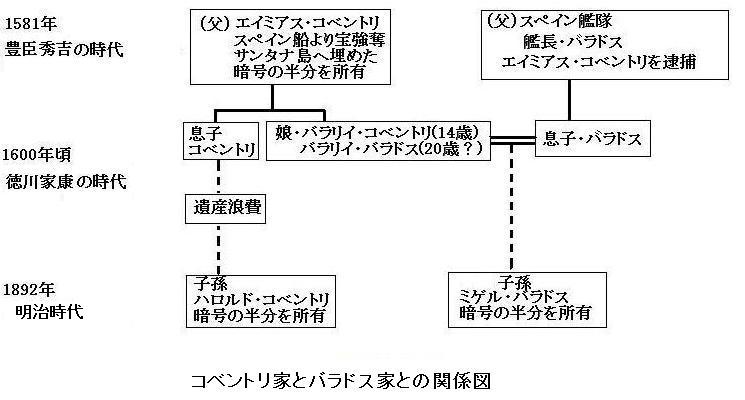
「我が家の言い伝えによると、バラリイの
それ以上前置きせず、バラドスがポケットから小さな革袋を取り出し、中から薄汚い羊皮紙の断片を見せた。
船長がちょっと興奮して、鉄製金庫を開け、もう一つの羊皮断片を取り出し、窓に近づけ、光がよく当たるようにして、両者のへりをくっつけた。
船長が
「ぴったりだぞ。見てみろ」
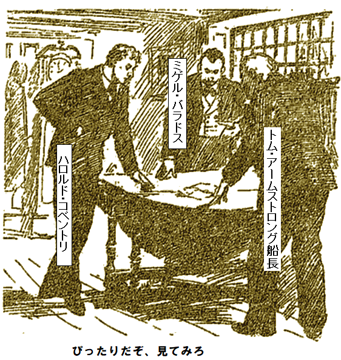
三人が暗号を食い入るように見つめた。記号はみみず文字で奇妙に書かれ、くしゃくしゃで、ちっとも価値がありそうに見えないが、解読さえできれば、ひょっとして隠し財宝の秘密が分かるかもしれない。
ハロルドとバラドスが判じ物を見た。これだ。
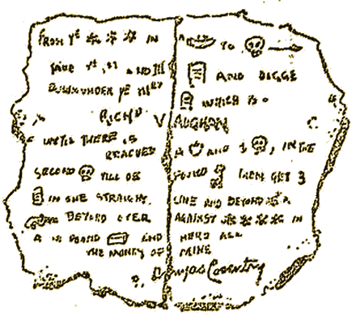
全員が熱心に見たあと、ハロルドが笑った。
「ハハハ、何も分からないでしょう。しゃれこうべのほかは」
「たぶん、島へ行ったら、暗号が解けるかもしれん。わしなら、すぐだ」
「その朝飯仕事をお手伝いしてくれませんか。船長は素晴らしい才能の持ち主ですし、やり方を教えてくだされば、千ポンド出してもやぶさかじゃありません。もちろん、コベントリ氏も興味があるので出資なさるでしょう」
二人がハロルド・コベントリを見た。船長は青い目を輝かせ、バラドスは
「やりましょう。船長はいつ出発できますか」
船長が
「すぐ行こう。必要なのはハロルドのヨットだ。あと一人か二人乗せて、雑用をさせよう。大騒ぎしないほうが好都合だ。わしの科学装置に準備時間がちょっとかかる。一週間で出発できるぞ」
第二章
テムズ川を望むグリニッジの
日没前、夕日が青い
ヨットは天然の小さな入り江に係留した。ほとんどの船乗りはハバナに行くし、一カ月もかからないから、この入り江に来たのは三人の
総督の
バラドスもハイジの魅力に
でもアームストロング船長は
船長が慎重に
「舟橋の長さは十分ですか」
とハロルドが
「計算によれば、今立っている浮台はまさにサンタナ島の真上のはずだ、島は過失島にくっついているに過ぎん。本来はサンゴ礁で、近くの浅瀬につながっていたが、サンタナ島は海深く沈んだ。ちょうどその島の上におる。オブレディ、言いつけた配管は設置したか」
返事代わりにオブレディが、いかだから持ち上げた細い配管はおよそ直径四センチ、岸につながっているようだ。
「なんてこった、けったいだ。海中に穴を開けるとはよく聞くが、こりゃ見たことない。船長、海底トンネルをおもちゃ鉄砲で作りやしたね」
アームストロング船長が冷静に返した。
「あまたの例外がある。これで、浮台に立ったまま
「でも、まさかこの小さな管と噴出液で、海中五百メートルの筒を作ると
こうハロルドが聞いた。
「そうだ、簡単だ。何年間も
「もし、それ相当の装置があれば、海底まで降りられる空間を作れますか」とバラドス。
「いや無理だ。ナイヤガラ滝で発電機が動かせたら、大西洋に二千キロ四方の空間を作れるかもしれないが、わしの装置では海底から直径六十センチの煙突もどきしか造れん」
こう言いながら船長が細いジェットを下に向けると、あっという間もなく、
ハロルドがポケットから小銭を取り出し煙突に投げ込んだ。数分経ってこだまが返り、何か下の堅い物質に当った。アームストロング船長が叫んだ。
「思った通りだ。もう一個投げてみろ」
ハロルドが言われた通りにすると、同じく鋭い音が返ってきた。
「どうだ。この湾の海底は砂と泥だぞ。なのに、この下にはどうやら固い層がある。わしの理論を証明しておる。サンタナ島はカラバ島の噴火で放出された石と溶岩で沈んだ。だから、サンタナ島を
船長が黒い流体を止めた。やがて、耳障りなゴボゴボ音が不気味に煙突の下から聞こえてきた。急激に
「予想通りだ。この石は明らかに火山性じゃ」
ハロルドとバラドスは無言だ。指導者の
「うまくやってください。わたしゃ、こんな悪魔仕掛けは苦手だ。自然法則でっか。けっ、今度海へ出るときゃ、酒びん持参だ」
「まだ目的を達成していません。危険なく降りる空間を作ってくれませんか」とバラドス。
「それは必要ない。そんなことをしないで降りる予定じゃ」
「不可能です。人間は海面下五百メートルでは死にます。最高級鉄で
「固体全面に同じ圧力をかければ、壊れないだろ。木の実は歯で
ハロルドとバラドスが
「わし自信を固くするんじゃ。インド行者の修行は否定しないだろ。墓の中で何カ月も仮死状態で眠っておる。この仮死状態は簡単じゃ。だが、この状態と、身体能力があるのとは、全く別物だ。それをやろうというわけじゃ」
「魔術だ。ちげいねえ。あっしはいつ魔法使いになったって、驚きませんぜ。名門生れのあっしにとっちゃ願ったりだ」とオブレディ。
ハロルドもぐっと興味をひかれて言った。
「分かります。身体機能、つまり体の器官が維持される限り、相当長い時間、海中でも生きて、行動出来ます。船長、心臓や肺を止めても、手足や脳を動かせますか」
「もちろんだ。口や耳や鼻をふさいで、つまり呼吸を止めて生きられたら、海中に何日間、いや、それ以上留まれて、発見も……」
バラドスが割り込んだ。
「でも、肝心の圧力はどうなるのですか」
船長が落ち着き払って反論した。
「わし自身を固くすると言わなかったか。命を保つに必要な知識については驚くほど無知だな。命の
「できそうですね。ですが、そもそも、どうやって海底まで行き、その後、どうやって戻りますか。海面下五百メートルですよ」とハロルド。
「それが目下の悩みじゃ。だがやるぞ」
明らかに船長の声には
「船長なら、やれまさあ。船長が地球の中心まで行くと決心なすったら、中心にあるという熱さえも、止められやせん。胴着のポケットにゃ、火消し道具がありまさあ」
自分への称賛を船長が笑った。
「ははは、やるまで結果は分からん。今のところ、降下や上昇方法は分からん。でも電気推進機が使える。英国出発前に一部試験した。ヨットに積んできたから、明日試す予定だ。降下すれば上昇も簡単だ。機械に乗り込み、排気すれば、海面に上昇できる」
「ゼラチン注入のゴム管はどうするのですか」
こうバラドスが
「上昇する前に切断する。海面までわずか数分だからその間、身体にさわりはない」
「海底では何をされるのですか」とハロルド。
「大量の邪魔な石を取り除く。空想的だと笑うかもしれんが、わしが持っている爆薬に比べたら、ダイナマイトなんぞセトリッツ粉末同然だ。ライフル弾より小さい。だが、もしこの瞬間爆発したら、我々は木っ端みじんになるのみならず、
船長がおどけて薬きょうを不安げにもてあそぶものだから、ハロルドがビビった。
「船長、どうか、しまってください。恐ろしいことです。キリスト教徒に何かあって、真っ当な葬式に肉体が残っていなかったら、大変なことになりますから、少しは残してください。そして復活の
「だまれ。持って来た箱を渡してくれ、ラリ」
ラリが、運んで来た黒い箱を開けた。中から取り出した三個の黄銅製の管は双眼鏡のようだが、ずっと長い。両端にガラスがはまり、中に真っ黒いインクのような液体が入っている。
「
ハロルドとバラドスが言われたとおりにして、双眼鏡の焦点を合わせると、二人同時に叫び声を上げた。あたかも海水が消えて、海草が空中に漂っているかのよう、
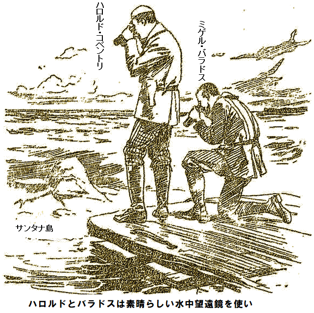
「すごい。海が消えて、かつてのサンタナ島らしきものが見えます。広い赤土と流砂だった土地が、大量の岩に覆われています」
アームストロング船長が動じず言った。
「もちろんサンタナ島だ」
「巨岩は除去できるとお考えですか」
こうバラドスが訊いた。
「あたりまえだ。今さっき岩の除去方法を聞いただろ。あそこの何というか、まともな名前なら島だろうが、その向うに少なくとも五百トンの岩が一個あるだろ。わしのドロマイト
「すごい。本当にびっくりです」とバラドス。
水中望遠鏡を見ているハロルドも叫んだ。皆に見ろ、と指し示す前方に爆発場所があり、ほこりが静まっていた。ハロルドが一人で興奮して叫んでいる。
「島本来の岩が露出したのが見えませんか。島の上に、はっきり三個の星印が見えます、エイミアス・コベントリの暗号書と同じです」
第三章
ひとたび発見に近づくや、アームストロング船長はぐずる男じゃない。海が
「
ハロルドが少し心配して聞いた。
「本当に大丈夫ですか」
「人体に関しては推測するしかない。
こんな実験はきっと危険だろうが、船長がいったんやると決めたら、てこでも動かないことをハロルドはよく知っている。
真上に太陽がある頃、小さな入り江に浮台を設けた。水深はどこも五十メートル以内だ。浮台に船長が枠を置き、その上に蒸留器を乗せた。
小型アルコールランプで熱すると、何やらガスが発生し、それを海水で冷やし、でんぷんのような半透明液体にした。これを再び金属容器に
「作動は分かるだろ。この金属容器は自動だ。一定量の
話すうちに、次第に変化が現れ始めた。手足は動くようだが、体がこわばり固くなり、胸と胃の膨らみようはまるでムナダカバト。頭もぶくぶく大きくなり、お笑い漫画の登場人物同然だ。周りで起こっていることは完全に分かっているようだが、しゃべれない。目鼻口が詰まり、あたかもニスを塗ったように、てかてか光ってきた。オブレディが化石状態の船長を見つめて言った。
「いや、妙だ、人体実験で、生きているとは」
だが、ほかの者は驚きのあまり、ラリの感想など聞いちゃいない。船長がガチガチの堅い動きで、浮台の端まで歩くと、バラドスとラリが脇の下に縄を巻きつけて、ゆっくりと海中に降ろし、ハロルドは水中望遠鏡で様子を見守り、万一何か起こった場合二人に合図をしようと構えた。でも船長の計算は確かなようだ。海底に無事着地、水中望遠鏡で船長の一挙一動が手に取るように見えた。
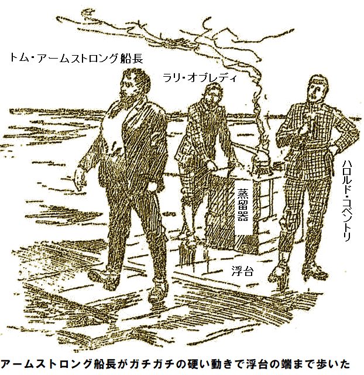
息もせず、心臓も肺も止まったまま、アームストロング船長は自力で立ち、海底を歩き始め、重い鉄製靴のおかげで浮き上がらない。一時間近く、海底に留まり、何ら不便を感じなかった。ただ耳に激しいゴウゴウ音が響き、手足に変なちくちくする感覚があった。
完全に意識はあり、夢見心地で、もうろうとして、
ハロルドとバラドスは息を凝らし実験を見守った。あたかも陸地のように、船長が海底を自在に支障なく
ハロルドが船長の
「船長、おっかさんに見られんでよかった、全く我が子と分からんぜ。下にいた時、連中が何てったか」
「面白くなかっただろ、ハハハ。諸君やったぞ、分かったぞ、海中でも地上と同じように生きられる。だが問題もある」
ハロルドとバラドスが一斉に尋ねた。
「何ですか」
「当然、水深五百メートルの海底へ行く方法じゃ。原始的な
「なぜ電信装置ですか」とハロルド。
船長がやや、つっけんどんに答えた。
「海中じゃ話せないからじゃ、バカ者。だから信号を覚えろと言ったろ。電信で海上と直接話せる。一人は海上に残り、残りの二人が海底に降りて、
しばらくハロルドとバラドスは不安げに見合った。だがいずれやることだし、半時間も経ずして、両者既に十分間、海底を歩く素晴らしい感覚を楽しんだ。少なくとも頭上五十メートルは海だった。
船長がもう終了だと命令して、皆で浮台の錨を引き上げて、陸へ上がった。
「事故の訓練は受けただろ、ラリ」
ラリがニヤリ笑って言った。
「やりたかありませんや。あっしゃ生れた地上が皆と同じように好きなんでさ」
だが船長はもう計算に没頭していた。沈島へうまく降りる方法がはっきり見え始めた。それのみならず、快適に一日数時間働く方法もだ。今やるべきことは潜水艇を試験すること、もし強力な電気推進機がうまく行ったら、降下は簡単だ。
午後はまだ残っていたけど、一同がテントに戻り、昼食にかぶりついていたとき、ドン・ザルバ総督と娘のハイジが馬に乗って、状況を見に来た。
総督は背が高く上品な
「あなた方に会いに来ましたのよ。父がとても興味をもちまして。私も少し好奇心が」
ハロルドには魅惑のスペイン語が
「お宝がなけりゃ興味無いでしょう、ハハハ」
やや強引なお世辞をバラドスが言ったが、ハイジはちら見して怒り、
ハイジは冷酷で
「あの男は信用できません。きっとハロルドさんを嫌っています。用心なさい」
「バラドスはいい男ですよ、ハハハ。単なる
ハイジが黒い瞳を向けて、ハロルドの顔を妙に
「あの男を決して信用してはいけません。あなたを嫌っています。その時が来たら、分かります」
ハイジが立ち上がり、ハロルドの案内を断り、小屋へ歩いて行くと、中でアームストロング船長がドン・ザルバ総督に潜水艇の説明をしていた。
船長はここ数日忙しかった。ハロルドが好奇の目で見上げたのが、床を占有している大きな円錐状の機械、形は
アームストロング船長が説明した。
「いいか、必要なすべてをそろえた。初めてこの潜水艇を自重で沈める。重さを十分考慮して造ったので、外殻に海水を満たした時、海水よりわずかに重くなるようにしてある。スクリュウと舵で
ドン・ザルバ総督が答えた。
「ある程度です。この機械に鋼線をつけて、自在に上下させようと
「その通り。良い名前が無いもんで船と言うが、この船はいつも同じ場所に置いとく。船は人間を上下に輸送する時にだけ使い、一端着地したら、
「ですが、船長の
こうドン・ザルバ総督が訊いた。
アームストロング船長が冷静に答えた。
「防御方法は考えた。ドロマイト
ハロルドが不安げに訊いた。
「そんなに強力なら、海底は危険じゃないですか。つまり、万が一……」
アームストロング船長がさえぎった。
「一切ない。忘れたか、
船は巨大だが、とても軽く、やがて舟橋
「一時間潜るぞ。バラドス、蒸留器を見張れ」
ハイジのかわいい顔がやや青ざめたけれど、何も言わなかった。船長とハロルドが胸を膨張させ、船に乗り込み、まず
直後、船が沈み、見学者達が水中望遠鏡で見ていると次第に降下し、ついに海底に着いた。船内の二人が這い出し、科酸管の端を再び口にくわえ、ずんずん歩いた。
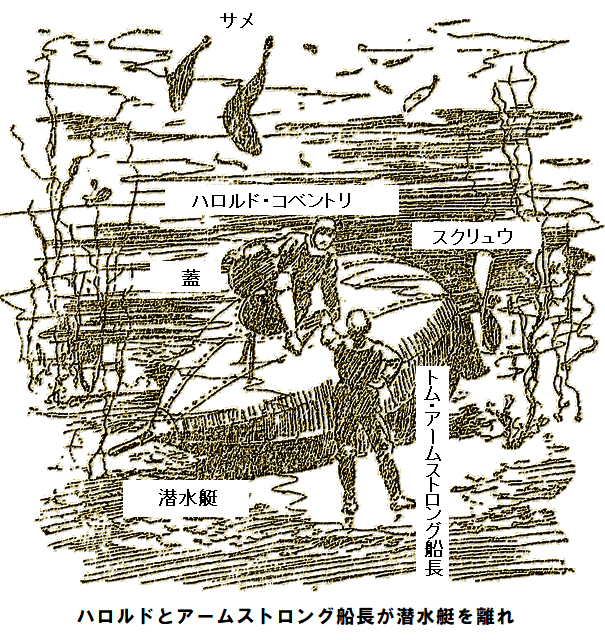
「すごい、ご無事で。あっ見て、サメよ、最低五百匹いる、あっ、二人が消えた、たいへん」
最後は絶叫だ。
第四章
船内は真っ暗、
ふいに
二人は船外に出て、溶岩の上に立った。沈島は溶岩に
大げさでなく、とても
そばを怪魚が行き交い、巨大なシタガレイは並の食卓よりでかく、エビもどきはハロルドの肩まである。足元にはカキ、この世の人間が見たこともない大きさだ。二枚貝は閉じたり、開いたりして、すべて巨大な真珠を持ち、輝いている。だが
両人の前には、陸地でいう水平線のかなたまで、砂地が平らに伸び、あらゆる種類の魚が
両人の立ち位置から沈島を見ると、はっきりと形が見え、ありていに言えばロブスターの爪のようで、この形から昔、つまり島が浮いている時、内陸湾だったに違いない。
船長が相棒に手話で告げた。
「ここが暗号に記された場所に違いない。形はよく分かった。でも先に進む前に、わしと同じように武装しろ。このドロマイト弾をうんと携帯しろ。すぐ一匹や二匹、海の怪物に出くわすぞ、深海はやさしくない」
ハロルドが爆薬をとって、
左手の巨大海草の森は
「もっと見たいです。特に用事があるわけじゃありませんが、好奇心がうずきます」
「反対はしない。行ってみろ。
二人は水の抵抗にあらがい、全力で前進した。海底の平地に着くと、船長が大群の魚を指差した。暗闇から来たようで明らかに二人に向かっている。だんだん近づくとハロルドが驚いた。一番
実に凶暴な怪魚で総数十数匹。一匹として体長十メートル以下のものはおらず、胴周り四メートル以下のものもいない。強力なあごを開いてズラリ並んだ恐ろしい
船長がドロマイト
「落ち着け、命に関わるぞ。残忍な怪獣の気を明らかに引いてしまった。奴らはまだ我々の始末方法を決めとらん。一匹が突進するまで待て。その時、狙い定めて
どうやらサメは人間並の分別を持っているようだ。
凶暴な奴が一〜二匹、近くに寄って来て
十五メートル以上サメが近づかないうちに、船長が小さなぜんまいおもちゃを放すと、回転しながら水中を真っ直ぐ進むのが見え、いそいそ
一瞬不安な間があったが、小さな投げ矢がリバイアサンに当ると、パッと光り、その場でぶるっと震え、完全消滅した。海がうっすら茶色に変わり、潜水艇の吹いた煙がどこからか漂ってきたようで、すべてが終わった。二匹目がハロルドに突進してきたが、同じ
二人は成功に勇気づけられ前進し、サメの群れに次々ドロマイト弾を数十発撃ち込むと、サメは仕打ちを恐れて近寄らず、わずか三匹を残すだけになった。この三匹も、敵がおそろしく強いことを本能的に感じて、北へ逃げ、たちまち視界から消え、あまりにも急だったのですべてが夢のようだった。
「やりましたね。船長がドロマイト弾を考えつかなきゃ危なかったかもしれません」
海草の森へ行きながら船長が応じた。
「武装無しでは無茶だぞ。深海生物のことはアフリカやブラジル奥地以上に何も知らんのだぞ。誰が未開地のど真ん中へ丸腰で行くか。どんな理由があって、海にサメより危険なものがいないなんて考えるか。見たことが無いのだぞ。ブラジルの未開林にも人が見たこともないのがおる。道ばたで名前も知らぬ生物が吠えるのを聞いたことがあるから、深海も同じだし、今も夢想だにしない生物に出会った。もしわしが間違っていなければ、向うの森にはもっと奇妙なものがおる」
ついに、うっそうとした葉っぱの下をくぐり、しばし留まって素晴らしい景観に見入った。木々はでかく、堂々としているが、微風に揺れ動くかのようにふわふわ、くねくねして、巨大植物の
実際、
いっそう森を幻想たらしめるのは、膨大な数のへんちくりんな生き物、
ハロルドが周りを見渡して叫んだ。
「なんて奇妙で美しいのだろう。夢にも見たことはない。連中が突然消えて隠れたのはなぜですか、まるで急に命を狙われたかのよう」
「下を見ろ、命に関わるぞ」
船長がこう言ったとき、どこからともなく現れた細い投げ縄のような長い巻きひげが、二十メートルほど伸びて、例の俊敏な動物の首に巻き付き、砂に
ハロルドが少しビビって言った。
「あんなのを首にやんわり巻かれたらたまったもんじゃない。でも、ぜひ見たいですね」
「気をつけろ。あの岩の後ろにどんな怪物が隠れているか、神のみぞ知るだ。遠回りしろ」
二人が慎重に
前に出るのをためらっていると、かちかちという変な音がして、中に
なんだ、ただのロブスターだ。だが何という代物だ、胴周りは六メートル、長さはその三倍、ハサミの大きさと言ったら、並の馬を
怒った猫のように背を丸め、細い足で立ち、何ならごつごつ
「
「我々が原因じゃない。我々には武器がある。別な敵がおるな。たぶん戦いが見られるぞ」
船長の手話が終わる寸前、下に別な危険生物が現れた。敵ロブスターだ。大きさも同程度、同じく猫のような態勢で前進し、今度は俺の番だとばかり、立ち止まって大きなハサミをカチカチ鳴らした。
奇妙で面白い
特有のうなり声をあげ、
一時間近く戦いが続き、次第に挑戦者が疲れて来たようで、
ハロルドが負けた怪物の方へ行きながら、
「何か分かるかもしれません。是非とも寸法を測りたいです」
語り終わらないうちに、まだ死んでいなかったロブスターがハサミを広げ、ハロルドの腰をがっしりはさんだ。もし
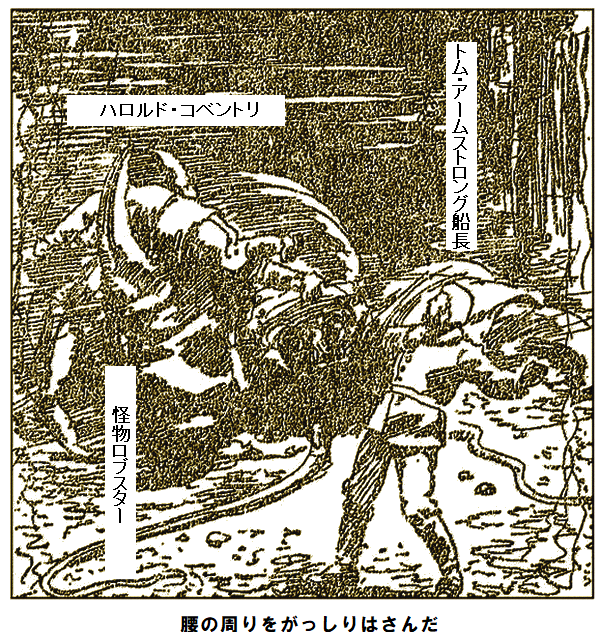
命が危ないと船長が即断した。死に損ないの怪物ですら、最強物質をじわじわ
一瞬間を置いてハロルドは砂上にぐたっと横たわり動かなくなり、ロブスターは海中に吹き飛んだ。その時ハロルドの生死は不明だった。
浮台の連中がやきもきしながら心配して見ていると、船長がハロルドを半ば引きずり半ば運ぶようにして、やっとのことで潜水艇へ収容して、まず科酸管を
やがて潜水艇が最初ゆっくり、次に空気を噴出して急速に上昇してきた。
五分後、船長が出てきてハロルドを浮台に寝かせ、死んでいるようだったが、耳を胸に当てて心臓が少しでも動かないか必死に調べた。
第五章
ハロルドの
意識を取り戻した時、総督邸の涼しい部屋に横たわり、ハイジがぴったり付き添っていた。少し体が重く疲れていたが、それ以外は極めて調子が良い。船長の行動を切に知りたかったが、気づかざるをえないのは女の魅力、黒い瞳でやさしく熱くハロルドを見ていた。
ハイジがハロルドの額に冷たい手を置いて、心地よい言葉をささやいた。
「あ、よくなりましたね。とても嬉しいわ」
ハロルドがハイジの小さい手を自分の唇に引き寄せた時、誰よりも愛らしく思えた。
「思い出した。怪獣に襲われたんだ。そのあとのことは何も覚えていない」
ハイジがかいつまんで説明した内容は、船長が鋼線の設置に成功したとか、ドロマイト弾で相当量の岩を除去したとか、沈島本来の地肌や、財宝を破壊しなかったことなどだ。
ハイジが懇願するようなまなざしで言った。
「これ以上関わらないと約束してくださいね。とても怖かったわ。何事も起こらないでほしい」
明らかに最後の言葉には愛情がこもっている。それを聞いて手の震えを感じた。あの黒い瞳で心をかき乱されたのはこれが初めてじゃないし、何回もこのメキシコ美人を大切な人と思い、バラ色の夢を見た。心臓の鼓動が早くなり、湧き上がる愛の気持を口走った。
「俺が死んだら本当に嘆いたかい」
ハイジのほほがパッと赤くなった。ハイジを引き寄せてかわいい顔をのぞき込むと、目がやさしく輝いた。
「分かってるくせに。南国の女は感情を隠せないのよ。英国の冷たい女とは違うの。あなたが死んだら、私の心臓は破裂するわ。ああ、あんな危ない所には二度と行かないと約束して」
「用心する。でも船長を見捨てられない。財宝は見つけるよ。見つけたら僕のもっと大切なキミと分けよう」
こう言いながら、ハイジを引き寄せてオリーブ色のほほにキスした。
ハイジは意味が分かったが、何も聞かなかった。楽しい日々が過ぎ、ハロルドが再び元気になった。二人はバルコニーの陰でのんびり過ごし、昔話を教え合った。いつの時代どの言語でもおなじみだ。
ハイジはハロルドの胸に体を寄せ、腰を抱かれ、南国の情熱にまかせてキスした。愛が苦しいかのよう。将来を語り合い、誰にも、そうバラドスにも邪魔されず気づかれなかった。
監視尾行するのはこの男だけだ。ハロルドの成功を
ハイジが繰り返し言った。
「バラドスに気をつけて。あなたが潜る時は私も立ち会って悪さをしないか見張ります。皆さん同様に装置は分かりますし、忠実な味方のオブレディと一緒に悪事を見張ります」
ハロルドが慎重に言った。
「絶対にやらないよ。疑い過ぎだよ」
恋の
ハイジの願いもむなしく、ハロルドが答えた。
「準備できていますけど、そんなに急ぐことはないでしょう。何をなさったのですか」
海岸へ降りながら船長がすべてを説明した。ハイジとドン・ザルバ総督もついて来た。総督は重大作業が行われると聞き、見学を決め込んだ。船長が言った。
「わしは沈島の溶岩を目一杯排除した。これ以上深掘りしたら、地殻を破壊しかねないし、もしかしたら元の地殻は思ったより高い位置かもしれない。わしの計算によれば、沈島はもう浮くはずだし、浮かばぬ理由は考え付かん。ただし、下層にくっついておらず、少しも埋もれていないことが条件だ。周囲の端には砂地が現れ、サンゴ礁も少々露出しておる。実際、健康な
「うまくいくとお考えですか。逆にサンゴ礁が粉々に吹き飛ばされませんか」
「それはない。前にも言ったように、ドロマイト弾は水平方向にしか作用しないから、言わば
どうやらハロルドがいない時に、ずいぶん作業したようだ。水中望遠鏡で沈島を見れば、ほとんど石が無くなり、わずか数十センチ残すのみで、本来のサンゴがあちこち露出しており、沈島の形がはっきりと見え、あたかも地図に刻まれているかのようだった。
探検隊にとって幸運にも、ドン・ザルバ総督が古い海図を発見しており、
「大いに役立つぞ。暗号書にどくろと、右向きの矢印があっただろ。人を惑わせるように書かれておるが、手元の古図によれば、陸はロブスターのハサミ形をしており、その間は内陸湾だ。ハサミの先端の名称は地図上でそれぞれ三ツ星点、シュール点だ。暗号書を見ろ、突破口だぞ」
少し間を置いて、ハロルドが言った。
「そのようですね。こう読めます。『三ツ星点から乗って……』おそらくボートでしょう。『ボートに乗ってシュール点へ行け』こっちからあっちへ横断するということです。あとは今のところ意味不明です」
バラドスがひどく意気込んで言った。
「いいですか、水中望遠鏡で見ればはっきり、三ツ星点のサンゴ礁に、深い星型が三つ刻まれています。島が浮上したら、すぐ残りの暗号が探せます。もたもたしている場合じゃないでしょう」
目が輝き、顔が
早くやりたくて全員うずうずしていたが、午後が過ぎ去りつつあり、その前に降下の準備がもろもろあった。潜水艇に必要なすべてを装備し、ドロマイト三十グラムを積み、船長の計算では地上なら町を破壊する量だが、海中なら沈島を海底に釘づけしている歯根を取り除くに十分だ。探検者たちも必要なものを全部そろえた。そのあと、船長が最後の指示をした。
「ハロルド、科酸管の操作は分かるだろ。もし忘れたのなら、ラリが頼りになる。水中望遠鏡で見ていれば、ドロマイト弾が爆発するのはすぐ分かる。鋼線の下に用意してあるモータに大きなドロマイト
バラドスが真っ青になって聞き返した。
「私ですか。私を連れて行くのですか」
「もちろんだ。ハロルドは
ラリがうれしくなって絶叫した。
「ありがてえ。あっしは悪口いわれて怒らないなんてねえですが、今回は許しまさあ、船長」
船長が
「できません、一緒に行けません」
船長は無駄な議論をする男じゃない。ハロルドに顔を向けると、ハイジが反対したけど、うなずいた。バラドスは依然として拒否して、
「行くよ。前より危険はないし、これが最後だろう。ラリ、水着を着せてくれ、忘れ物が無いか見てくれ」
腰ぬけバラドスは
だが、やり方はよく心得ている。忠実なオブレディもいるから、ここに留まって、監視しようと決めた。愛する人や船長に
準備が整ったのを見て、船長が短く言った。
「これ以上待てん。潜水艇を下ろせ」
探検者が
ラリに知らせて蒸留器に継ぎ足させると、ちょっと前に満杯にしたと言う。バラドスを見れば、探検者を熱心に見ている風を装っている。
ハイジが小声で言った。
「二度とやらないで。危な過ぎます」
バラドスが振り向いて、ニヤリ。
「何のことですか。私が何か…」
「分かっているくせに。バラドスさん。確信犯ですね。海底の人に危険だってことは私でもよく分かります。もしこんなことを繰り返したら、あなたがもっと危ないですよ。島には大勢の男どもがいます。もし私が一言いえば、犬ころのようにあなたを打ち殺しますよ、つベこべ言わない。私を怒らせたら怖いですよ」
バラドスはブツブツお
一方、探検者達は無事に海底に着き、装備を取り出し、その中に配線と電池があり、爆破の為に持参したものであり、配線を持って砂地を横切り、行先は沈島の係留箇所、船長の言葉を借りれば、巨大な中空
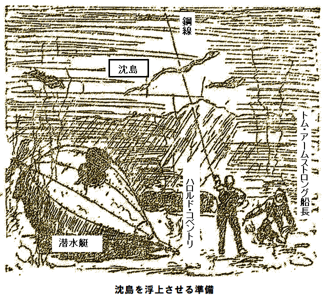
海底の二人が
見たところ、沈島の穴は大きな洞窟になっており、不規則につながっており、二人とも中に入ろうと思わなかった。船長が手話で告げた。
「こいつは予想しなかった。全部の歯根を切断するには沈島の中央部分にドロマイトをしかけねばならんが、その為には一人がそこへ運んで、つまり一キロメートル歩いて往復しなければならない。かのロブスター紳士に間近に出くわす格好の機会だぞ。開けた所なら何も怖くないが」
やっかいなことになった。解決にはどうやら
用心が必要なようだ。だって進むにつれ想像も出来ない奇妙な怪物がぞろぞろ広い所に逃げてきたからだ。ロブスターはハロルドを
十五分後、船長の望む所まで侵入し、ドロマイトを水平な岩台に置いて、電線を取り付け、這って戻り、再び柔らかい光の海中に立った。
「うまくやりましたね。僕は神経質じゃないから、後日、侵入場所と危険場所を知りたいですね。船長は今までこんな異常生物をわんさか見たことがありますか」
ハロルドの指差す方向から、奇妙な海洋生物が一匹ずつ二人の所へ這い出してきた。だが船長は電池に夢中だったので、周りの異変に気がつかなかった。
「爆破する。よく見ろ、今まで見たこともない奇妙なことが起こるぞ。さあ、爆破の威力を見よ」
船長がボタンを押すと、魔法のように沈島が揺れて震え
「あっ、しまった、神よ、お助けを。取り残された」
足元に明かりがピカッ、最初は小さかったがだんだん大きくなり、目がくらんだ。あたかも巨大な力で押されたかのように、文字通り光りの方へ引き寄せられ、互いにしがみつき、猛烈な力でぐるぐる回された。
直後、膨大な水と共に、真っ逆さまに空洞へ突っ込み、海底の割れ目を通る様は、巨大
第六章
見ればあたかも深海の巨大怪物が鎖を断ち切られたかのようで、沈島が傾いて浮上する有様は、サンゴ礁を沈めた巨岩を投げ捨てて、石で覆われた板の端を持ち上げてすべり落としたかのようだった。その後、巨体が海面に上昇し始めた。
バラドスが叫んだ。
「陸にあがれ、危ない。島が上昇して浮台に当ったら、粉々になる」
見物人にとって運が良かったのは、島を持ちあげる海水圧力が巨大なために、当初ゆっくり上昇するから、十分な時間があり、舟橋を走って海岸へたどり着けたことだ。
到着後ほどなく巨体が浮上し、ものすごい音と共に海水がどっと押し寄せた。浮台や舟橋に当って揺らす様子は紙で作られたかと思うほどだった。
しばらくして波の揺れと浸水が収まり混乱が静まると、膨大な泥とヘドロがゆっくりと岸に押し寄せた結果、引き潮状態の海岸になり、ボートを使わず渡れるようになった。
バラドスが急に怖れおののき、尋ねた。
「二人はどこだ。浮上した島に、乗っているはずなのに。ああ、いない。見ろ、鋼線が切れている」
確かに、一端がぷつんと切れ、急に引っ張られて消失し、まるで
「大したことはないだろう。いずれにしろ潜水艇に乗って上がってくるし、鋼線は単なる道案内に過ぎない。二人の安全に心配はない」
だがハイジは納得しなかった。ドン・ザルバ総督とオブレディも不安だった。ハイジはいかだを直し、浮上した島へ行くまで
すごく不安になって、ハイジがオブレディの水中望遠鏡を借りて、いかだの端から海底を見れば、強力なドロマイトできれいさっぱり。何もないが、妙な海洋怪物や、
まぶしい光源に海水が勢いよく流れ込み、じょうごのように白い渦を巻き、はっきり見えたのは海水が深い穴に流れ込み、周りのすべてを渦の中に引き込んでいる。
ハイジと一同が気づいたのは、強力な流れのせいで、魚や海洋怪物が二〜三回ぐるぐる回転し、どうやら地球の中心へ引き込まれているようだ。
ハイジが望遠鏡を置き、すすり泣いた。
「どういうことなの。大穴があいて、海水が地球の中心へ流れて行くかのようだわ」
ドン・ザルバ総督もひどく動揺した。
「これが大渦の原因だ。どうやら二人は、地下に引き込まれたようだ。潜水艇もない。希望はあるが、神にゆだねるしかないな」
総督は望遠鏡を置いて、すごく悲しい気持ちになった。ハイジも気も狂わんばかり、心が張り裂けそうで、家に連れていってと頼むと、皆黙って悲しみを浮かべて帰路に着いた。とりわけラリの嘆きは
「用のない所に人間が行ったのが原因じゃ。神様は島を海底に置きなすって、留まらせようとなすった。あの泥んこで船長が浮上して、うまくいったと思ったのに。宝だと。楽しむ前におっ
一行はひどく悲しみに打ちひしがれていたので、ラリの変な理屈に無反応だったが、バラドスだけは
だが前日、自分の悪行でハイジが
午後が夜に変わり、夜が朝になり、行方不明者が現れる気配はなかった。ドン・ザルバ総督が一人で海岸に来たのは、ハイジが前日の惨事でひどく参ってしまい、じかに来られないから調べる為だった。総督は虫の好かないバラドスと取りとめのない話をしてから、自分の邸宅へ戻ったが、バラドスはここぞとばかり、待ち望んでいた島の調査が思う存分行なえる。
ラリは幸いにも邪魔しなかった。くだらぬ口実で邸宅に上がり込み、そこでハイジのかわいい召使いイシドレに足止めされていたからだ。
この二日間、強力な陽光で、運命の島に積もった泥やヘドロはすっかり乾いた。泥がそれほど大量じゃないのは前日の浮上でほとんど洗い流されたためだ。やや引き潮だったので、バラドスは海岸に降りて、細長く狭い水路を歩いて渡り、ついに
明らかに島はサンゴ礁からできている。泥がすっかり洗い流され、巨大な溶岩も二〜三個を除き消滅し、残っているものは本来のサンゴ、あちこち大量の岩に付着しており、周りは何世代も前、創世時に形成された基盤だ。岩の成分がなんだろうが、本来の基盤であり、溶岩とまったく異なる。この溶岩こそが島を沈め、近くのカラバ島が爆発して三世紀前に積もったものだ。
バラドスが辺りをじろっと眺め、上機嫌になったのは調査場所が狭いと分かったからだ。当てずっぽだが、ざっと見積もったところ、面積は全部で三ヘクタール、広くないし、実際その通りだし、案内なしで十分いける。
真ん中に高さ十五メートルばかりのサンゴ礁がそびえていたので登った。高所から強力な双眼鏡を使えば、どの場所もよく見えるため、もしかしたら暗号を解く何か見つかるかもしれない。
ポケットから暗号書を取り出して、しばらく熱心に見ていた。とっかかりは解読できていたが、心臓がドキッとしたのは、双眼鏡で見えたのが、小さな
「間違いないようだ。三ツ星点からボートに乗れば、そう、
こうつぶやいてバラドスは高所から降りて、ぐるっと歩いて北側の岬へ行った。そこで見つけたのがサンゴ礁に囲まれた石群、その中に頭骨をかたどった石があった。さらに興味が増したのは、以前セメントで固められた形跡があり、三個のどくろ石に判読可能な
「墓石だ。暗号書の半円記号は船員の埋葬地だ」
これが分かれば、解読できそうだ。最初の墓石を見て手掛かりをつかんだ。二番目の墓石、三番目の墓石と進むと、歓喜の叫びをあげ、以下の碑文を読んだ。文字は切れていたり、ナイフで掘ったりする破目になったが、内容が分かった。
享年二十二歳の
リッチ・ボーガンをしのび
忠実なる友人の
エイミアス・コベントリにより
ここに埋葬さる
バラドスが暗号書を見返してつぶやいた。リッチ・ボーガンをしのび
忠実なる友人の
エイミアス・コベントリにより
ここに埋葬さる
「三番目のリチャード・ボーガンの墓を掘ろう。何か見つけるまで、三個の頭骨は分からん。手掛かりは近い。だが墓掘りには普通の農耕具以上のものが必要だ。吹っ飛ばしてやろう」
墓石はサンゴ礁にしっかり埋め込まれていた。基盤の溝にきっちり詰まったセメントはナイフの刃など受け付けない。ドリルを入手して、火薬を詰め、墓場をふっ飛ばすしかない。
バラドスが用心して辺りを見回したところ、人影はない。急いで海岸に戻り、火薬、信管、ドリル、配線を抱えて、楽しいお遊び場所へ戻った。
バラドスが急いで島へ戻って行くのを、ラリが作業小屋の片隅で見ており、密かに
「英国人なら、こんな真似はせん。やりやがって、悪党め。だが俺がいる限り、宝は持ち逃げさせん、バラドスさんよ」
見張られていることも知らず、バラドスは作業に戻った。強力な双眼鏡でラリが動きを監視した。ドリルを使い、掘った穴に一発分の火薬を詰めている。信管に点火するや、すばやくサンゴの
下にサンゴの天然
「ついにスキと頭骨にたどりついた。二番目の頭骨がカギかも。これまでのところ順調だ。さて、海の印の意味が分かればなあ」
バラドスが三番目の頭骨を持ち上げた。行動はラリから丸見え、じっと監視されていた。ろうで密封された小箱を墓穴から取り出し、頭骨を戻して、小箱を開け、手にしたのは鋼製のカギだ。かつて鍵屋が製造した時は光って錆びてなかっただろう。
「ここまでは順調だ。残りが難儀そうだな」
しかしながら思ったより簡単だった。覚えておられるだろうが、暗号書は宝の隠し場所を次のように述べていた。
『墓印三つを一直線に、拳銃印まで伸ばし、石印を背にすれば、四つ星印が見つかり、そこにわしのお宝がある』
エイミアス・コベントリがすべて指示していた。
意味が分かったので、ひもを最初の墓にくくりつけ、これを基準にして、三つの墓を一直線に見て、ぴんとひもを張って、拳銃の射程距離と思われる所まで歩測して、後ろへ下がった。
まさにこの線上に、とにかく四つ星印が見つかるだろうと思い、少し探すと、果たして失望しなかった。後ろに下がった背中が、垂直に設置された階段みたいな岩棚にぶち当たり、その上にひもを乗せて、ふっと階段の壁を見れば、案の定、四つ星があった。
胸を高鳴らせて調べた。前の墓石と同じように、四つ星印を刻んだ石も、セメントで固められており、靴のかかとで叩いてみたら、中空の音がした。興奮しまくり、ドリルを使い、石に穴を開け、一発分の火薬をつかんだ。
火薬を詰め、信管に点火し、岩棚に隠れ、爆発を待ち、ジリジリする時間は数分どころか数時間の気がした。
手をブルブル震わせ、顔を汗まみれにしながら、バラドスが
「さあ、どうだ。これで俺の運が決まる」
ラリがごくんとつばを飲んで見ていると、バラドスが直後に立ちあがり、両手を頭上に上げ、身振り手振りで狂人のように踊った。それから前かがみになって、両手を突っ込んだ。
だがラリ・オブレディには見えなかった。山盛りの金品、べらぼうな宝石、高価な金銀容器、バラドスはびっくり
第七章
ぽっかり空いた大渦の中に引き込まれた船長とハロルドは
引き込む潮流の音がシュー、ゴウゴウと聞こえた。どんな外圧にも耐えられるという
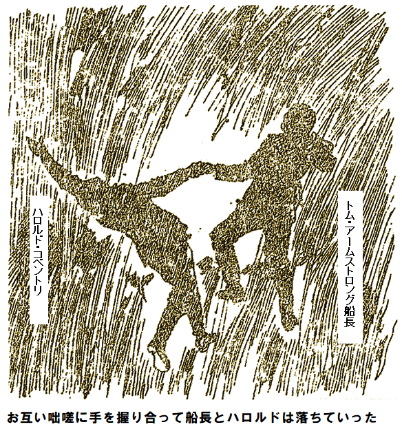
落ち続けている限り問題はない。船長はまだ感覚と理性があり、一番恐れたのが、固い物にぶつかることだ。手を握り合い、落ち続けている間に、水の状態が変わった。透明な
やがて筒の端に達したようで、下は満々と水が広がり、ほかからも水が叩きつけ、ゴウゴウ、シューとしぶきを上げ、あたかも雲の上から巨大な滝が、つまり二十個のナイヤガラが一つになって、
しばらく立ち上がれなかった。科酸がもう供給されず、切れ始めたので、呼吸が苦しくなったからだ。立ち上がった船長の顔は真っ青、ハロルドは鼻血を少し流していた。しばらく、目の中に赤い斑点がちらついていたが、濡れた背中を乾かすと、次第に意識と感覚を取り戻した。
助かった。科酸が大いに役立った。科酸で
さしあたり危険が去ったので、周りを見渡す余裕ができた。大気というか、空は無いようだが、柔らかい光が、どこともしれぬ惑星を照らしている。
見える範囲内にあるのは、澄んだ透明水だけ、
ベニスの町を大都市郊外に移したと思えばいい。小道や道路の代わりに、ただ水があるだけ。二人の目撃現場を描写しよう。
浮かぶ区画にはそれぞれ家と、四角な庭があり、区画の周囲には木々が植えられ、水面の端に覆いかぶさっているので、水路は森と言うか、葉っぱの道路と言ったところ。何キロにもわたり家が続き、どの家も水晶で造ってあり、キラキラ輝き、柔らかい光を発しているが、光源は謎だ。
ハロルドが
「夢じゃない。明らかにこの世です。どうやら地底に来たようです」
船長が冷静に答えた。
「そうらしいな。あの引き込まれ方を見れば、地底は空洞で、海水の流れ込む穴がある。そして絶対、海水の出口もどこかにあるぞ」
船長が指差した二番目の落下水柱は数キロ離れていたが、まさに自分たちに惨劇をもたらした
船長が話しを続けた。
「ここの深さはどれくらいかな。科酸を使い切った時が実質水面に浮いた時だったから、確実に一時間落下したに違いない。落下平均速度を毎秒百五十メートルとすれば、毎分九キロメートルで落下、つまり一時間で五四〇キロメートルになる。おおざっぱに言えば、五百キロメートルだから、数百キロメートルも落下しとる」
ハロルドがいらついて割り込んだ。
「そうならないように注意してくれたらよかったのに。船長は優秀ですけど計算ミスでひどいことになりました。とにかく衣服があればいいのですが」
「浮世に戻る方法は考えておる。お前が口を
水晶の家から、二人のいる真四角な
少しも恐れる様子もなく、近づいて来て、しばらく興味深そうに眺めていたが、それは二人も同じこと。この謎世界の住人はごわごわの体毛がなく、人間と変わらないが、とてもすべすべして、きめが細かく美しく、女性のような顔だ。実際、人間世界の美女でもその肌なら、うらやむだろう。
「誰ですか。どうやって来たのですか。我々と似てますけど、アストラ人とは違いますね」
変な生き物が、妙に変わった発音ながら、見事な英語で聞いたので二人はびっくり。
アームストロング船長が答えた。
「同じ言葉だぞ。ここで人に会うとは全く驚いたけど、キミも同じだな。すまんが、裸を隠せるものが何かないか」
ハロルドが割って入った。
「服は生まれつき着ていないのですか。私達はキミらと同じじゃない。衣服が必要なのです」
アストラ人が首を振り、意味が分からないようだったが、ちょっと待てと言ってから、しばらくして戻り、大量の柔らかい布を持って来たので、船長とハロルドが、できるだけうまく整形して、糸で縫い合わせた。糸は気を利かして持って来た。
ハロルドが透明な水面に、自分の奇妙な姿やら、つるつる頭を写して、言った。
「気持ち悪いが、まあいいか。借りができたので、自己紹介と行きましょう」
船長が地上世界のことについて、明快かつ簡単に語る驚きの話に、アストラ人は大いに感心し、歓声を上げた。それから今度は自分の番ばかりと話し始めた。
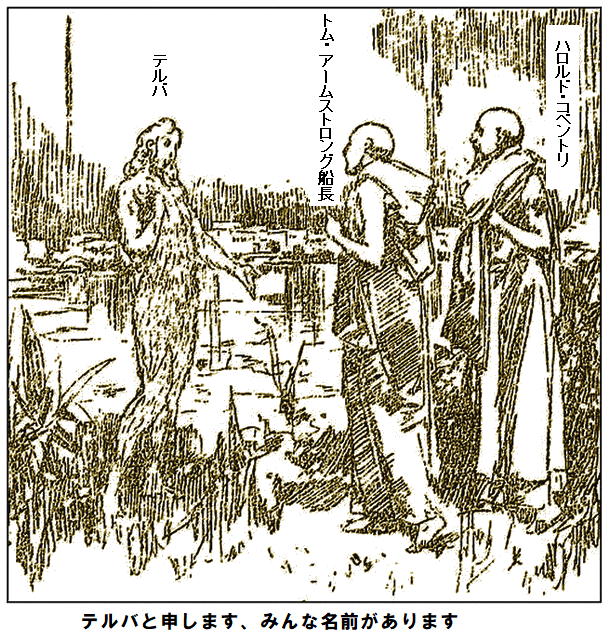
「私が何者か、なぜ英語を話すのか聞かれましたね。私はテルバと申します。みんな名前があります。ここはアストラ国です。今日まで私を含め全員、ここが唯一の世界だと思っておりました。私達がなぜ英語を話すのか知りませんが、
家は水晶のような透明な物質からつくられます。この物質は水中から得られ、ある昆虫の生成物です。支配者はおらず、完全に平等です。必要な食べ物は皆さんの目に前にあるものです。年長者の言葉によれば、水が急激に蒸発し、その化学作用が液体と反応して、至る所で柔らかく輝く光が発生し、この世界を照らします。
蒸発を
自称テルバが話を中断し、低いけどよく通る口笛を吹くと直ちに、透明な水中から似たような姿が多数現れ、
水中から出ると体がすぐ乾くのは、アザラシやカワウソと同じだ。年齢や性別は様々だが、特に若い女性は、例外なくとびきりの美人だ。均整がとれ、最高の容姿で、この上なくかわいい。どの顔も色白で、どの瞳もきれいな濃い青、肌は雪のように白く、
連中に
「これからこの二人は私達のお客様です。国中に伝えなさい、行く先で歓迎して
大いに友好の感情を表わして、みめうるわしい者たちが次々、たおやかに潜水すると、数分後にはまたテルバと三人きりになった。ハロルドが口を開いた。
「さっき食べ物のことをおっしゃいましたが、どこにありますか、腹がすいているのです」
返事代わりに、テルバが食虫植物の葉で容器を作り、透明水をくみ、ハロルドに渡すと同時に、どうぞ飲みなさいと言った。飲んだ途端に元気が出たので、おかわりして三杯目で感じた満腹感は
「全く幸福で理想的な生活だ。キミらはすべてを手に入れたようだ。だが我々のような人間には、そのうちとても退屈しそうだ。分かるかな」
テルバが首をかしげた。ハロルドはハイジの黒い瞳を考え、今頃俺が死んだと思っているだろうなあと思った。船長の考えに大いに賛成するけど、礼儀上、言わなかった。テルバが言った。
「おっしゃることは分かります。尊重します。いつか故郷へ帰りたいのですね」
「その通り。早いほどいい。生活基盤がある。キミらは地上でも水中でも生きていける。その能力を我々に移植できないか」
テルバが気の毒そうに頭を振った。何世代にわたって獲得した特技に過ぎなかった。
船長がハロルドに向き直り言った。
「わしの考えはこうだ。あの滝の下にもう一度行きたい。わしの考えじゃ、ねじれ落ち、コルク抜きみたいな
「あんな水柱をどうやって登るのですか」
とハロルドが
船長が大胆に答えた。
「霧吹きじゃ。下向きに落ちれば、同様に上向きに登るものだ。実際、空気が大量に上昇しておる。だから、長さ七百キロメートルの管を作って、その中を登れば元の世界へ脱出できるぞ」
ハロルドは
「やるぞ。蒸留器は
「科酸で体を石化しなければなりませんね。危険じゃないですか、科酸は長く持たないし、供給手段もありませんし」
船長は笑うばかりだ。賢人にとっては困難など単なるお遊び、ちょっとしたお楽しみだ。努力と決断力で打ち負かせる。
「二〜三日あれば、解決できる。その時、全部話してやる。既に見え始めておる。必ず戻るぞ」
ハロルドはとんでもない滝壺を見て苦笑いするしかなかった。
第八章
この瞬間までハロルドは船長の優れた独創性や、素晴らしい
アストラ人は水陸両方でくつろげるし、海底で遊んでいると、面白そうなものを見つけて興奮し、引き上げて見れば、鉄箱すなわち潜水艇と分かった。船長たちがサンタナ島へ潜った
「まさにこれが欲しかった。実際これが見つからなかったら、大変なことになった。このガラクタを開ければ、火薬や液体があるから、今のわしにとても貴重だ。中央気密室には知っての通り、原料があり、オンタールや科酸やドロマイトが作れる。何週間も無駄な作業をしなくて済むぞ」
あれこれ試して、潜水艇の外板を取り外した。アストラ人には珍しい火を使い、外側を取り除いて、船長が工具箱を見つけ、それを使って、中央機密室へ侵入すると、水密が保たれており、中に大量の
最少手間で、アストラ人住居材料の水晶から、船長が蒸留器を造った。多数の瓶に科酸を詰めて、巨大滝壺の底に潜り、空気室へ行ければ、船長の科学知識だと空気室があるはずなので、科酸を大量に運び、人体に補給しながら、地上へ帰ることができるだろう。
短い距離だし、緊急だし、
アームストロング船長が原料を蒸留するのを横目にハロルドが言った。
「うまくいくか分かりませんよ。大
船長が平然と言い放った。
「今は分からんが、そう長くかからん。覚えておるか、オンタール噴射だ。直径六十センチの穴を五百メートル貫通させたぞ。噴射は針穴に過ぎないが、オンタールには海水もかなわない。ガスの当る所に穴があく。わしの信念では、激しく噴射すれば、滝の中央に下端から上端まで、長さ八百キロメートルの穴をあけることができる。どうだ、有言実行のわしなら何でもできる。これを見ろ」
そう言いながら船長がゴム管を数百メートル引っ張り出した。一端は小さな蛇口につないであった。また、壊れた潜水艇から大きな四角ゴム板を取り出し、大風呂敷と合体させて、薄いゴム風船のようなものを作った。
「これにオンタールを詰める。少なくとも滝壺の中心に到達したときだ。そこにアストラ人達が木材を提供して、小さないかだを浮かべる。そのうち、わしのやろうとしていることが分かる。水上でゴム風船を使い、煙突を作って登り、地上に出るぞ」
「やる気十分ですけど、方法が重要でしょう。もっと詳しく知りたいですね」
「たぶん、普通の黒色火薬を使って空中高く、そうだな、六十メートル飛ぶロケットを見たことがあるだろう。そこでだ、ドロマイトを使えば、八十キロメートル飛ぶロケットが作れる。かなり長いけど、足らんというかもしれん。第一段ロケットの力が無くなった時、第二段を爆発させ、これを繰り返せば、最低でも千六百キロメートルは確実に保証する。おっと、もしかしたら月まで行って、特殊金属を発見できるかもな。だが、今回は月まで行く必要はない。八百キロメートル以上は要らないし、限度だ」
船長は当分、面会謝絶だ。来る日も来る日も働き、遂に準備万端整い、滝壺探検の時が来た。テルバと仲間たちが喜んで道案内を申し出た。二人の探検者たちの熱意が通じたからだ。今までアストラ人は誰もこんなことをやろうとする者がいなかったが、船長の気迫に共感して、尻ごみしなかった。テルバが言った。
「滝の力はものすごいですけど、広い海では位置がわからなくなりますから、私達はしばしば大滝の下を通り、何ら不便、というか、全く影響は受けませんが、ただ相当深く潜らなければなりません。おっしゃるようにあなた方が相当時間、水中で平気なのでしたら、案内は拒みませんし、娘のアステリアにも、この若いお方の案内をさせましょう」
清純な顔、青い瞳の美しい
テルバが言うに、いかだを作る木材集めは難しくないが、条件として滝の中心に行けて、そこに船長の予想通り、空気室があり、その下に静かな海があることだとか。船長が言った。
「もたもたしている場合じゃないぞ。すぐ行こう」
テルバと娘は反対せず、船長は首に短いゴム管と、小さな袋をくっつけた。あとでこの袋にオンタールを満たし、秘密の実験を行う。問題のオンタール生成原料を入れた瓶はハロルドの肩にくくりつけた。二人は服を全部脱いだが、手作りの下着はつけたまま、科酸を瓶に満たし、二本ラッパ飲みして、海中に飛び込んだ。
船長はテルバの後をぴったりつけ、一方アステリアは本能で進路が分かっているようで、どぼんと飛び込むと、ハロルドの指先を自分の肩につかませて、道案内した。こんな美しい人魚と透明水中を泳ぐのは、とても新鮮で、決して不快なことじゃない。
最初ゆっくり、それからだんだん早く泳ぎ、海底を一定方向に進んだ後、アステリアが父の指示で上昇し始めた。ハロルドが近づいてよく見れば、お互い話をしているようだが、耳には聞こえなかった。上がって見れば大量の泡や
ちょうどアステリアが疲れて道案内をあきらめかけた時、父のテルバが数メートル前進し、両手を下にかいて、顔をあげ、さっと上にあがった。ハロルドが科酸をまた吸っていると、アステリアが嬉しそうに微笑みかけて、優雅に前進し、今度は自分の番とばかりに、すぐ上昇し始め、緑の静海へ到達すると、ハロルドの眼前にザーザー、ゴーゴーと荒れ狂う溶鉱炉みたいなものがあった。上昇するにつれ、だんだん明るくなり、ついに水面に達した。
空気で科酸が分解され、声を取り戻した船長が言った。
「予想通りだ。滝が渦巻いて落ちているぞ」
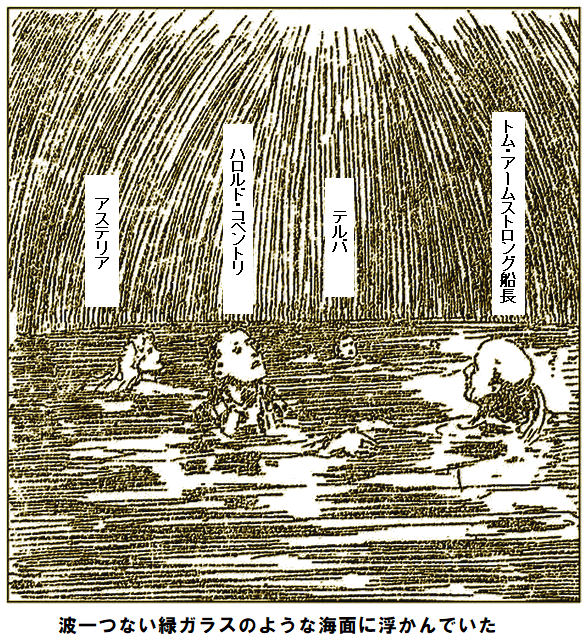
ハロルドが辺りを見渡すと、波一つない緑ガラスのような狭い海面に浮かんでおり、
天頂には細い針穴がある。余りにも静寂なので、大
「期待以上だ。ところで、テルバ、ここへもう一度、簡単に来られるか」
「今なら間違いません。もちろん言葉で説明できませんが、たとえ水中でも私達の千里眼なら確かな目標が見えます。あなた方には見えません。私とアステリアは目隠しでも来られます」
船長がうなずいた。いま知りたいことはそれだけだった。背中の荷を降ろし、もたつきながらハロルドの手を借りて、ゴム製の袋に二種の原料を入れて、オンタールを作り始めた。
じゅうぶん化学反応して、必要なガスが発生すると、管を天井に向け、ゴム袋を脇で圧縮して、緑の海水にガスをシュッと吹きつけると、一瞬にして海水がエメラルド宝石のようになった。オンタールの固化作用はまさに瞬間的だ。円筒が瞬時に出来て、数分で数百メートル貫通したので、アステリアとテルバはびっくり。
船長がガスを止めて、こう言った。
「この取扱いには注意してくれ。キミたちの協力が必要だし、我々の命がキミたちの手順にかかっているからだ。もっと大きな袋を造って、それに小さな管を七〜八本つける予定だ。袋はここに浮かべるいかだに乗せて、ガスが発生したら、袋の上にキミたちが十人以上乗って、体重をかけてくれ。交代してこれを三時間やってくれ。管は常に天頂に向けるようにしろ。これを二時間もやれば、直径三メートルの空洞が大滝の真ん中に貫通する。分かったか」
テルバが理解して、興味深げに言った。
「よく分かりました。友達を呼んで、必要ないかだをすぐ作らせます。空洞ができたら、どうやって登って、外へ出るのか、是非知りたいです」
「分からん、詳細は決めておらん。申しわけないが、早急にいかだを作ってくれないか。キミたちの家が立っている
すぐかかってくれとお願いして、船長は科酸
半時間後テルバは自宅に戻り、アステリアはハロルドとどこかに行き、船長は自分の仕事に没頭し、一瞬一瞬がきわめて重要のようだった。おちおち
小型の加熱炉を造って何でも作れるようになり、二日間で潜水艇の
容器の中に船長が科酸瓶を数本入れた。すぐ使えるようにゴム管をつけてある。それと自作のドロマイト弾、さらにオンタール用の小さな密閉袋も入れた。使い道はあとで分かる。
「こんな巨大コーヒー缶で一体何を」
こうハロルドが尋ねた時、いかだがやっと完成したとテルバが報告に来た。
「まずいかだを運べ。アストラ人に手伝わせろ」
こう船長はそっけなく返事しながら、ゴムシートに妙な発明品をくるみ始めた。
何か面白いことをやると聞きつけたアストラ人達が周りに集まり、お手伝いを申し出て、ハロルドの言う巨大なコーヒー缶を
「いつ試されるのですか」
船長が即答した。
「すぐだ。結果が最善か最悪か早く知りたい。お前の言うコーヒー缶が脱出手段だ。科酸を吸って、すぐ出発だ。待ち遠しい。滝壺に着くころまでに手話で話す」
いやに謎めいた表情の船長を横目に、ハロルドが水に飛び込んだ。すかさずテルバが滝壺の中心へ案内すると、既にアストラ人達が重荷と到着していた。
かたずをのむような静寂が辺りに広がり、船長が梱包をほどき、器具をいかだに置いた。
第九章
しばしバラドスは正気を失ったようだった。狂喜して箱の周りを悪魔のように踊り狂い、笑いころげながら、腕をまばゆい金品に突っ込み、指にひっかけ振り回すと、華麗な炎が揺れるようだった。何百万ポンドが目の前にある。値段のつけられない宝石、ダイヤ、サファイア、真珠、ルビーなど総額二百万ポンドもの宝飾や、高価な金銀食器が大きな箱に厳重に
なにより、一つ残らず自分のものだ。財宝を一人占めしても、誰も反対しないし、一度ちょっと隠して、ほとぼりが冷めたら、取りに戻り、ホタル号に乗せてハバナへ行けばいい。探検目的を知る唯一の船員オブレディは選択肢の一つとして、殺せば何も怖いものはない。宝を海岸へ運ぶのは数日かかるだろうから、しばらく隠して小さな鉄箱に移し替えればいい。鉄箱は英国を出港する前に、運搬目的に調達したものだ。
そんなことを考えながらバラドスが、くずサンゴをかぶせ、その下に箱を隠し、海岸へ行った。見たところ誰もいないし、ドン・ザルバ総督も姿が見えないが、手掛かりは隠さねば。
ドリルを使い墓石の碑文を削り、岩の星印も消して、暗号書の記号が残らないようにして、自分の
ラリがやっと隠れ場から現れて、つぶやいた。
「好奇心なんて欠点どころか病気だな。俺もワルの先祖から受け継いだぜ。奴が何をめっけたか調べてやれ。くだらんもんかもしれねえが」
ラリはのんきな
やっとサンゴを取り除き、財宝の輝きを見た時、うぉっと座り込むしかなかった。しばらく考えて埋め戻し、両手をポケットに突っ込み、口笛を吹きながら海岸へ戻った。まだ全容がつかめなかったが、バラドスがお宝を発見し、隠そうとしていることだけは分かった。これだけ分かったので、ラリは直ちに総督の邸宅に行き、すべてを話し、指示を仰ごうと決めた。
総督とバラドスが庭先でワインを飲みながら煙草をふかす一方、ハイジは隅で青い顔をしてふさぎこみ、イシドレにかしずかれていた。イシドレがラリを見るや、ちらっと艶っぽい目をやり、ラリも威勢よくお辞儀で応えた。このかわいいメキシコ女はラリの多感な心を射止めたけど、同時に、代わりに自分の心を失うはめになった。
ラリが来た時、バラドスがこう話していた。
「あの島にはもう宝はありませんね。あったとしても、とっくに無くなっていますよ。たぶん熱い溶岩でやられたでしょう」
ラリが知っているぞという風にバラドスをねめつけたが、おやという疑念を招いただけだった。愚直なラリは
「あしたよく調査します。何も見つからなければ、このラリ・オブレディをハバナへやって、ヨット船員を確保させます。船員は十分休暇を取っているから、任せて私は退去します」
ラリがかっとなった。
「ちょっとそれはないぜ。ちった正直者なら、そんなこた言わねえ。ハバナへ行くもんか。宝探しするだって、もう見つけたくせに。ほんの一時間前なにしてた。この嘘つき盗っ人、スペイン野郎」
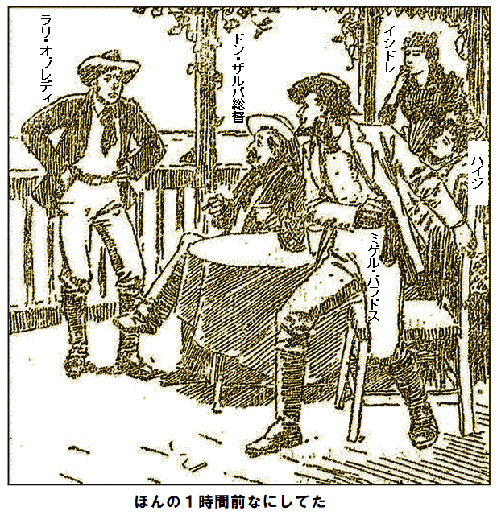
バラドスが顔面
バラドスがすごんだ。
「奴は狂ってる。酔っぱらっている」
ドン・ザルバ総督があっさり言った。
「酔ってるようには見えないけど。オブレディ君、もっと聞きたいですね」
だがラリはそれ以上言わなかった。ドジを踏んだ。
間違いだったとか、はっきりしたことは分からないとか、つぶやいて裏側へ引っ込んだが、一方のバラドスは愛想笑いを
イシドレはハイジから真実を探れと命令を受けて、ラリを
「馬鹿だね。何を見つけたのよ。どうしてあんな悪党に言ったのよ。今に殺されるわよ」
「俺はいままで外人を恐れたことはない」
とラリが勇ましく返した。
「大したご挨拶だこと、私も外人だけど、ホホホ。あんたは今まで出会った中でとんでもない愚かな男ね。こんな男を好きになって不思議だわ」
ラリが猫なで声で割り込んだ。
「でも好きなんだろ、かわい子ちゃん」
愛を引き留めようとイシドレが言った。
「もちろん好きよ、さもなきゃここにいないわ、馬鹿ね。
ラリが割ってはいった。
「俺は六番目か。やつら不満だろ、ざまみろ」
「私は満足よ。アロンゾ、パウロ、アンドレア、残りはみんな怒っているわよ。血祭りにあげるよ。笑わないで。気安く考えないで。みんな危険で残酷だわ。それにドン・ザルバ総督にも怒っている。ちょっときっかけがあれば邸宅を襲って、全員殺されるよ。ゆうべ血も凍るような話を聞いたの。いい、暴発したら、私達を守る人は誰もいないのよ、総督とあんたのほかに」
ラリが
「奴らは何もしないさ。かわいいおつむを悩ませなさんな。正々堂々と戦えば皆に勝てる」
「そうかもしれないが、正当なやり方はしないわよ。闇夜で待ち伏せされたら、かなわないでしょう。まさにそれよ」
ラリはそんな不吉な予言などへっちゃら、英国人以外の凡人なら軽蔑して当然と、余りにも尊大だった。笑って、我が身は自分で守ると約束したが、誰も、ましてはアロンゾやパウロやアンドレアを恐れるものかは、イシドレと一緒に召使い部屋へ戻って行った。
二人は銀梅花やレモン
その間バラドスはいろいろ厄介事を考えながらも、夕食後もずっと邸宅にいた。ハイジは頭が痛いと言って寝室へ引っ込んだ。
ドン・ザルバ総督はおもてなしに大わらわ、バラドスに対して、
「元の所で寝ますよ。放浪ぐらしが長かったので、ベッドでは眠れないのです。残りの時間は宝探しに集中します」
ドン・ザルバ総督がバラドスをキッと見据えた。まだオブレディの言葉を忘れていない。バラドスが察知して、作り笑いで言った。
「少しお疑いのようですね。あんな無学の船員より、私の真面目な言葉を信じるべきですよ」
ドン・ザルバ総督が
「あなたは私のお客様ですし、間違いと分かるまで信用します。それにアームストロング船長も信頼していますので、船長と若いお連れに再会する望みはまだ捨てていません。もし財宝が私の所有地で発見されて退去なさる場合、法にのっとり三分の二を請求いたします。ただし、あの二人の死亡を確認した場合です。死亡は六ヶ月間、宣言できます」
「賛成です。実際、ご提案は公正です。宝を発見したら連絡します」
こう言ってバラドスは立ち上がった。夜も更け、既に召使いもほとんど寝室へ下がっており、最後の煙草に火をつけて、総督と握手して、海岸のテントへ戻って行った。
長い距離じゃないが、足元は暗闇でも慣れたものだ。それほど行かないうちに、誰かがあとをつけていることにすぐ気付いた。用心してさっと回り込み、マッチを
「立て、両手を上げろ、さもないと本当に撃つぞ」
しぶしぶ男は従い、近づいてみれば、浅黒い陰険な顔、イシドレが噂していたパウロだ。おし黙ってこわごわ見ている。
「つけていませんよ。危害を加えるつもりはありません、誓って」
「知るか。なら、こんな時間に何でここにいるんだ」
パウロの目がメラメラ。怒りで恐怖を忘れた。
「言います。あなたのとこへ来た船員をつけていました。オブレディめ、畜生、何という名だか。奴がご
「俺がオブレディだと思ってつけてきたのか。オブレディだったら殺したのか」
とバラドスが厳しく問い詰めた。
「何をおっしゃいますか。警告だけです」
とパウロは無造作に肩をすくめた。
バラドスが反射的に自分の口
「俺はオブレディに消えてもらいたいと思っているんだ。これは内緒だぜ。お前は無事に逃がしてやる。もし危険なしに五百ドル
「旦那やりますよ、ヒヒヒ。五百ドルの為なら何でもやります。イシドレを連れてここから脱出できます。ヘヘヘ、あっしを使ってください」
「使って試してみよう。仲間四人で奴を消して欲しい。そしてあしたの朝、夜明け前に俺のテントへ来い。もしオブレディが今晩生きていたら、お前らは来なくていいし、金はやらん。分かったか。もし奴が死んだら……」
バラドスが意味深に笑って中断する一方、パウロが黄色い歯を見せて
半時間後、同じむじなの捨て鉢のならず者どもが三人、オジギソウの
パッと身の危険を悟り、最初の男がナイフを振り上げて突進してきた時、ラリがこぶしを
「きやがれ、本物のアイルランド人が相手になってやらあ。なんてこった、ナイフが無ければ、全員一度にのしてやるんだが。この人殺しの卑怯者、丸腰の男をやみ打ちするか」
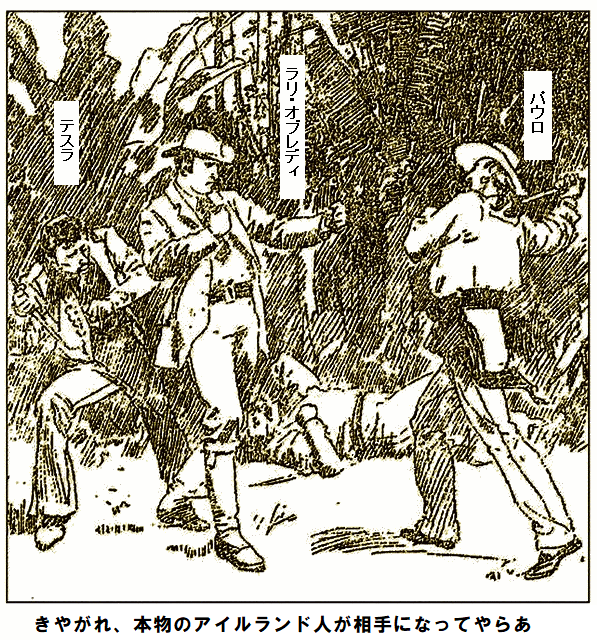
ラリが素早く向きを変え、腕に浅傷をうけながらも、振り下ろすナイフを避けた直後、敵は鼻が顔にめり込んで泥に突っ伏した。だがそれがラリの最後のもがきだった。弓矢のように別なゴロツキが突進し、ナイフをラリの左側に突き刺した。ラリがうめいて地面に倒れた。
パウロが倒れた体を
「死にやがった。テスラ、ラバみたいに蹴りを入れろ。俺の顔の
三人のならず者どもが首謀者の命令に素直に従った。藪に放り投げても死体はウンとも言わなかった。
暗殺者どもの足音が消えるが早いか、女が暗闇から現れた。すすり泣きながら、死体にかがみ、耳をオブレディの胸につけた。安心したのか、火事場の馬鹿力を与えられたかのように、ラリを腕に抱えて、ゆっくりとドン・ザルバ総督の邸宅へ運んで行った。
第十章
アームストロング船長が妙な装置をいかだに置いて、しばらく慎重に調べていた。容器というか
ドロマイト
「このガスは強力だから、水に穴が開く。水は反応すると同時にはじかれる。八本の管を数分間、上に向けていれば、ガスがある限り、穴があく」
一瞬、見物人たちが驚いて見たのは少なくとも直径三メートルの真っ黒な無限空洞だった。壁は堅いピカピカの鋼管のようだ。
「我々が発射したら、ガスが無くなるまで保持してくれ。ガスが有る限り必要だ。いずれにしろ反応が終わるとっくの前に地上に戻る。その頃にはここと地上の通路が完成しておる」
「空洞を登る方法がよく分かりません。いま目の前にあるのはえらく長い
「今説明する。目の前の装置は多段ロケットにほかならぬ。つまりこのロケットは一段ずつ正確に爆発して、推力が無くなるまで、ぐんぐん上昇する。普通の火薬で花火を作っても、十キロメートル、つまりモンブラン山の二倍の高さまで飛ばせる。ドロマイトなら何キロメートル上がるやら…」
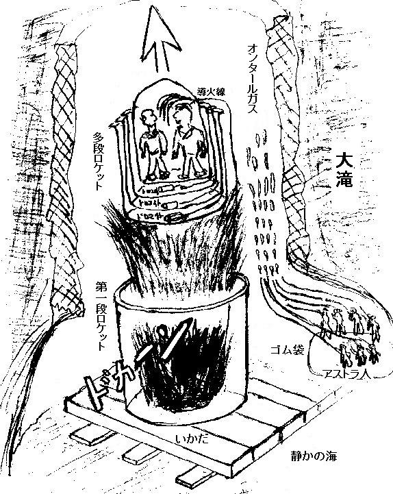
ハロルドがあえて口を挟んだ。
「水平にしか爆発しないのでは」
「そうだ。ある方法である物質を加えれば下向きに作用し、粒状にすれば上方向にも作用させることができる。缶の内側の導火線を見よ。一番長い導火線は多段ロケットの底につながっており、これを押せばドロマイトが爆発し、迫撃砲が普通の砲弾を発射するように、内側七缶を飛ばす。すべて爆発は上方へ向くから、見物人に危険はないし、ドロマイトの爆発力で、八十キロメートルほど上空へ運ぶことができる」
「ロケットの中に、はいれと
「ああ、内側の最終段の中だ。ちょっと黙ってろ。お前の言おうとしていることは分かるぞ。四百キロメートルに比べたら八十キロメートルは大したことがないけど、少なくとも二十分間は上昇できる。速度が弱まったら、二番目の導火線で別な爆薬を爆発させると、どうだ。二番目の缶が迫撃砲のように作動し、また同じ距離を稼ぐ。次々と爆発させたら、四百キロメートルの高さまで上昇できるが、五回以上爆発させる必要はない。小中学生でも分かる」
ハロルドが黙った。人には明白かもしれないが、こと我が身に関する限り全く納得できなかった。見上げれば、黒光りする禁断の通風孔が口を開け、未知の危険が予想され、今後の探検に身震いした。
「船長に身をゆだねて、必要なら危険を冒しますが、不具合が起こったら、恐ろしいことになります。やり方に反対はしませんが」
船長が余りにも冷静に平然と見上げたので、船長の勇気と決意がハロルドにも移ってしまった。老船長はいかなる危険にもおじけず、なにより自分の才能に絶対の自信がある。でもこの企ては最強の心臓でもビビるものだった。
「わしはこの計画を軽々しく始めちゃおらん。誰も見通しもなく命はかけん。装置はすべて試験済みだ。お前にやる気が無ければ…」
「それを言わないでください。一緒に行きますよ」
船長がしばらく時間をとった。心をこめてテルバの手を握り、アストラ人達に丁寧に挨拶して、二人はロケットに入り、船長が蓋を調整しながら、陽気に言った。
「さらばだ。袋のガスが無くなるまで、そこにいるのだぞ。さあ、どいてくれ、この管には触るな。命に関わるから。分かったか」
返事が聞こえるが早いか、船長が
数分間そんな上昇速度なので、船長とハロルドの出来ることは
常に強靭で勇敢な船長は恐怖心を振り捨て、自身に潜む野蛮なうずきを鼓舞し、可燃物に火をともし、通風孔を輝かし、ロケット船内を照らした。船のふたを開けて立ち上がって外を見た。
一瞬、強風で押し返されそうになった。赤い炎が見え、いまも上昇中、滝の落流がうなり、キラキラ光っている。やがて風圧が弱くなり、特殊
船長がこれに少しもひるまず、二番目に長い導火線を叩いた途端、全く衝撃や振動もなくロケットは再びぐんぐん上昇し、息を吹き返した。
勝利の雄たけびを船長があげた。大成功しつつあった。
しばらく経ってハロルドが回復して周りに関心を示した。四発目が爆発するとロケットはさらに加速した。やがて立ち上がって、船長と見たのはキラキラ輝く
「いまどれくらい登りましたか」
船長が五番目を爆発させて言った。
「だいたい三百キロメートルだな。爆発間隔でどのくらい進むか正確に分かり始めた。大間違いしない限り、もう爆発は必要ない」
「爆発させないと、まだ旅の半分ですよ」
船長は返事せず、
と、ハロルドがぐらっとよろめき、船内から浮いた感覚がした途端、船長がロケット先端にぶつかり、くっついた。二人とも同じ妙な感覚に襲われた。ロケットが引っくり返ったようだ。何とか立ち上がったら、二人ともロケット先端に立っていた。船底が天井だ。
「一体どうしたのですか。落ちているのですか」
「そうだ。まさに予想していたことが起こった。もう爆発は必要ない。逆さまになった。いまや地球引力圏内にはいった。落下しているけど、本来の場所へ落ちている。この通風孔が開いている限り、地球へ戻れるはずだ。地球へ落ちている、いや地球へ登っている、正確に言えばニュートンのリンゴが地上へ落ちるのと同じ原理だ」
ハロルドが船長の
「分かりますけど、結局どこへ着地するのですか。どうしたら旅の最後で地球への激突を防げますか」
船長が冷静に言った。
「備えは万全だ。すぐ辺りがもっと暗くなる。計算ではそうなるから、そのころ爆薬が燃え尽き、我々の行く場所はかつてサンタナ島が浮いて出来た穴の近くだ。今は空気煙突だけど、我々が戻る場所は
「ごもっともです、船長の実績に対して全く疑うつもりはありませんが、その通路を通りメキシコ湾に達したことがどうやって分かるのですか。もし六十〜八十キロメートル間違ったら、水路を突き抜けて、地面に落ちるのが避けられないし、その場合、いくら船長の発明でも激突死は防げませんよ」
「安心してわしに任せろ。今までわしの計算は実績に十分裏付けられておる」
話している間に光りがだんだん弱まり、遂に消えた。すかさず船長が科酸瓶を二本ひっつかんで、ハロルドにすぐ吸入しろと命じて渡した。吸入するが早いか、光りが消え、周りが真っ暗になった。船長が少しためらい、横に動いてハロルドを引っ張った。
ロケットが向きを変え、先端が
「今だ。ハンマーで導火線を打て」
ロケットがふらっと傾いたので、船長は一瞬言えなかった。ハロルドがすかさず、導火線を叩いた。ものすごい水しぶきとゴボゴボという音がして、ロケットが
わずかにロケットの向きが変わったので、船長が合図した。
「もう一回だ。早く。
再び爆発、再度ロケットが海を突き進んだが、また数百メートル進んで止まった。そして最後の一発を撃った時、前進して止まり、ぐらぐら揺れて、またあの強力な渦の吸引力を受け始めた。
船長が蓋をねじ開き、ハロルドを引っ張り出し、岩に飛びつき、必死にしがみついた。

吸引力はものすごかった。最後の爆発が無かったら、悲惨な結果になったに違いない。二人はがっちり海底の岩を
まさにその時、二人とも全力を使い果たし、ぞっとする恐ろしい不安に襲われた。科酸効果が切れたと分かったからだ。再び吸入して、ここにいては危ないと船長が判断し、方針を変え、上昇し始めた時点で、海面下五百メートルにあった。
ロケットが渦の中に引き込まれる前に、船長は用心して、余ったドロマイト弾を船内から取り出していた。この用心こそ
間もなく海面に近づいた。体がゆっくり浮き上がり、科酸瓶を使い切った。ハロルドは頭がくらくらし始め、眼の前に赤点が舞い、科酸が切れ、なんとか息をしようとした。失神したようで、両手がだらんとなり、もし船長がつかまえなかったら、また沈んだかもしれなかった。
拷問に耐え、なお上昇していると、だんだん暗くなり、遂に真っ暗になった。老船長が絶望的になったのは、腕に抱えたハロルドが、くそ重いからだ。これで終りかと思ったそのとき、頭に何か当たり、ぐっと片手でつかみ、馬鹿力を出して、切り立ったサンゴの
ハロルドがハアッと息をして気がついた時、真っ暗やみの中、硬い地面に横たわっており、どこにいるか分からなかった。船長が手をハロルドの胸に当て、喜びの声をあげたのは、地獄旅で死ななかったと分かった時だった。
「ここはどこですか、なぜ暗いのですか」
「推測はできる。おそろしい昇り旅だった。十分息ができんから、良い進路がとれんかった。わしの判断では、
第十一章
イシドレは刺された男をどうやって邸宅へ運んだか、分からなかった。
邸宅は真っ暗だし、召使い部屋も深夜勤務してないようだが、緑色のブラインドからかすかな明かりが漏れていた。ドン・ザルバ総督の部屋だ。事務所、資料室、喫煙室を兼ねている。イシドレがブラインドを軽くたたくと、すぐ総督が現れた。
取り乱したイシドレが
「いま家の者には秘密にした方がいい。ここには信頼できる人物がいないし、裏切りに感づかれたら、殺しをためらわないだろう。お前は自分の部屋に戻り、この男は私に任せなさい。ここにいることは誰にも言わないように」
重大秘密を守るのは難しいが、翌日も
「もし殺されたのであれば、犯人はそれ相当の刑を受けるでしょう。ところでこの邸宅で寝られた方が良かったのではないですか」
バラドスがすぐ否定。否定が余りにも早かったので、疑惑を確信した。もし埋蔵金を見つけていなかったら、何の為にオブレディを殺さねばならないのか。この疑問を秘めて、真実を探ろうと決心した。日が経つにつれ、抑えようもなかった事実、パウロを含む召使達がこそこそ陰謀をするようになったので、愛娘の安全が危ぶまれ、体が震えた。
だが警戒したのは総督だけではなかった。愛する男を卑劣に刺され、気も狂わんばかりに取り乱したイシドレも、復讐してやると、スペイン人特有の激情を持ちながら、猫がネズミを狙うように、しつこく監視していた。
パウロやアンドレアなどに対しては明るく何でもないように振る舞った。オブレディが奇妙に失踪したことについては無関心を装ったが、どんな動きも見逃さず、共謀者の陰謀を何回も耳にした。笑顔を振りまきながら、バラドスこそが
夜がまた来たが、暗殺者どもは犠牲者がごく近くにいることをまだ知らない。
猫みたいに忍び足で跡をつけていき、海岸に出てバラドスのテントへ着くと、仲間が集まっており、くぐもった声が聞こえた。パウロの足音を聞いて声が止んだが、パウロがテントに入ると、ガヤガヤ再開した。イシドレは細心の注意を払って近づき、聞き耳を立てた。
パウロの言葉が聞こえた。
「あるじの言いつけでちょっと遅くなったが、もう用はない。お前ら、何を決めた？」
「お前が来るまで何も決めちゃいない。頼みたいことがある。お前ら全員で俺をフィリピンへヨットで連れてってくれ。みんな船員だから出来るだろ。一人五百ドル払う」とバラドス。
アンドレアが即答した。
「即金だ。危険には
「それじゃ、半分即金、後の半分は目的地に着いてからだ。いい条件だろ、こんな取引は二度とないぞ。お前ら、この邸宅を出たいだろう、ドン・ザルバ総督を亡きものにして娘を連れて行っても、俺は何も言わないぜ」
パウロがぶつぶつ反論した。
「そいつは危険だ、もっともらわねば」
バラドスが厳しく応じた。
「俺がここへ来るずっと前からたくらんでいただろ。お前に会ってすぐ見抜いたぞ。もし総督を殺しても、十分その気だろうが、この島からどうやって逃げるつもりだ。俺なら快適な豪華ヨットを持っているし、
悪党どもがちょっと不安そうに見合った。陰謀とか自慢とか脅しだけならたやすいが、こと殺人となれば全く別だ。バラドスが煙草を投げ捨て、いらついてさげすみ、悪態をついた。
「おじけづいたか、そうだろ」
パウロがギラリにらんで言った。
「これ以上、
「ふん、危険には金を払う。お前らの
「望み通りにしまさあ。でも文句は言わんでしょうな、イシドレも連れてって。ハイジの世話をさせるだけですがね、ようがすか」とパウロ。
この言葉にどっと下品な笑いが起こった。イシドレは小さな唇を食いしばり、あの男には代償を払わせると誓った。降りかかる危険を察して、勇気を奮いたたせた。
バラドスが答えた。
「女一人ぐらいどうってことない。好きにしろ。さあ、みんなよく分かったか。以後、連絡しないぞ。あした夜中にヨットに乗れ。明かりはつけておく。海岸からの中継ボートは放置しろ。以上だ」
共謀者どもが立ち上がり、打ち合わせが終わったようだ。
そのあと奴らが本当に退去したか、バラドスが辺りを注意深く見渡してから、ランプを持って、行った場所が作業場、最近まで船長が実験をしていた所だ。イシドレが興味に駆られて、あとをつけ、猫のように身を隠し、すべての行動を掴もうとした。
バラドスが明かりを大きな荷箱に置いて、ポケットから鍵を取り出し小箱を次々に開けると、明かりに照らされてまばゆい宝が少なくとも十数個現れた。
元来の埋蔵場所はエイミアス・コベントリの暗号図、今残っている金はせいぜい一万ドル、バラドスが翌朝まで残しておいた。放置しても安全だ。誰もあるなんて疑わないからだが、総督とハイジだけは違った。
バラドスがつぶやいた。
「奴らがこれを知ったら、どう出るかなあ。俺を殺すかな。お宝はヨットの秘密場所へ保管しよう。明日は一日仕事だ、俺様にはきついぜ」
なおぶつくさ言いながら、次々に蓋を閉じて立ち去った。そのあとイシドレは暗闇にこっそり消えた。すべてを見届けた。バラドスは財宝を見つけている、ハイジから聞いた莫大なお宝だ。ドン・ザルバ総督が事態を
直ちにドン・ザルバ総督に知らせた。夜も遅かったが、総督はラリに事態の急変を知らせて、知恵を聞こうと決めた。ラリの傷は
「大丈夫でしょうか。ラリは弱っていますし、興奮は…」
「あなたが思っているよりずっといいですよ。うまい案があるのですが、オブレディ君に相談しないことには実行できません。知りたい情報を持っていますから。ラリ以上に船長のことを知っている人はいません。ラリの助言があれば、大災難を食い止めることができます」
「それまでに本土と連絡がつきますか」
「確実です。バラドスの出港を、そうですね、一週間遅らせたら、友人と連絡が取れ、悪党どもを逮捕できます。手助けがないと無力ですが」
イシドレが目を輝かせて言った。
「徹底的に戦いましょう。私を
総督が丁重にやさしく言った。
「信じましょう。早速あのアイルランド人に知らせて、妙案を聞きましょう」
ラリは安らかに眠っていたが、総督が触ったら目を覚ました。傷は驚くほど回復しているようで、総督の話を熱心に聞いた。ラリがぶっきらぼうに言った。
「ああ、最悪だったのは、方法が無くて、口で言ったことだった。俺はいま役に立たんし、運がないけど、ちった当てにしていいぜ」
ドン・ザルバ総督が応じた。
「ほんの少し助言が欲しいです。私に案がありますから、助けてください。バラドスは手下を信用していないから、財宝を運び出せなくしさえすれば、
「分かった、で、案とは」
「金銀財宝を溶かして塊にすることです。そうすれば、バラドスはパウロ一味を信用しなくなります。これさえやれたら、一日か二日遅らせます」
負傷している身ながらラリが力強く言った。
「やれるぜ、船長の最後の実験を覚えとるか」
「あっ、そうでしたね。この島には鉄鉱石と銅鉱石があるけど、溶鉱炉が無いため利用できないと、船長に伝えました。両方の鉱石を見せたら、船長が何かの酸を取り出して、大きな一つの球体に変えて、後で実験に使うと言っていました。オブレディ君、あの酸さえ手に入れて、財宝にぶっかければ、私達の命が助かります」
「酸をください、私がやります、
とイシドレが叫んだ。
男二人が驚いて、しばし無言でイシドレを見つめた。イシドレの度胸や大胆さに感心するも、そんな危険を女性に
「なぜ尻ごみするの。私が臆病で、おじけづいたとでも。総督、ここはあなたの島ですし、味方は私しかいないでしょう。私は宝のありかを知っています。拳銃を貸してくださればやります。使い方は知っています」
総督がうなずいた。イシドレは腕がいい。ラリが
「かわい子ちゃんにやらせなさい。作業場を知っているし、今なら誰もいない。戸棚の一番上にインタリック酸と書いた瓶があるはずだ。金銀とやらを全部床に置いて、数滴たらせば十分だ」
総督が即決して言った。
「二人で行こう、すぐに」
ラリは無言だった。力が出ないばかりに仲間に加われない。うまくいけと熱く願って、両人を行かせると、辺りはしんと静まり返った。
それからほぼ半時間後、総督とイシドレが作業場に着いた。バラドスのテントから三百メートルほど離れている。小屋の扉を開けるのは簡単だった。
中にはいって素早く取りかかった。ブリキ・ランタンをともし、イシドレは命が自分にかかっているかのように働き、総統はイシドレの助太刀で全財宝を一個の大きな荷箱に入れ、一つも見落とさなかった。汗が両人の顔に流れ、遂に入れ終わった。あとは酸を見つけて財宝にかけることだ。
目当ての
「ありがたい。すぐに試そう」
総督が瓶のふたを取って、金銀宝石にたっぷり振りかけた。宝石には酸が効かない事を知っての上だ。酸をかけるや、もくもく煙と、もやが上がり、晴れ上がったとき現れたのは金の巨塊、とても重くて持てない。ちょっと熱かったがすぐ冷めた。あやうく荷箱を焼くところだった。
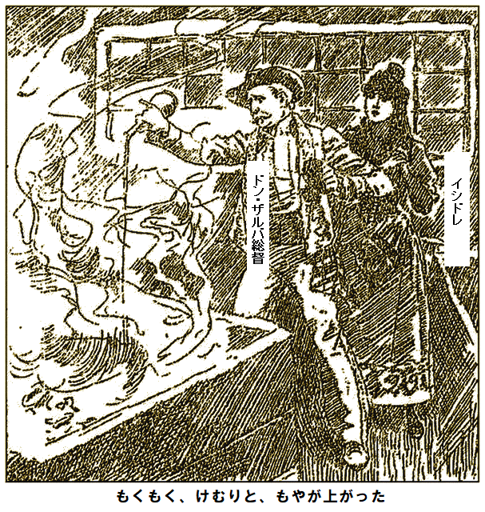
「やったぞ、すぐ邸宅へ引き返そう」
朝が来て、バラドスが今日の移送作業をしようと起きた。宝箱を次々に開けると、全部空っぽだ。逆上し、やみくもに荷箱を次々開けると、遂に目当てのものがあった。中を見て腰を抜かし、うめき、毒づいた。
「なんてこった。奴らがやるわけない、何も知らんからな。
バラドスが冷や汗を流した。
第十二章
二時間ほどで、船長とハロルドが、すっかり回復し、恐ろしい旅など忘れた。真っ暗だったが、危険は全くなく、ただ猛烈に腹が空いて仕方なかった。でも命ある限り、希望があるし、船長などこんな危機は
「ここにはおれないぞ。方法は一つだ。泳いで出口を見つけて脱出する」
「もし出口が見つからなかったら？ 辺りを泳ぎ回っても見つからないかもしれません。疲れて休む場所が無かったり、二度と戻れなかったら、ネズミのようにおぼれ死にますよ」
「たぶん一人出て、一人残ることになる」
「
「たぶん、欲しいものが見つかる、ハハハ。今欲しいのは長いロープだ。泳ぎ回れる十分な長さがあって、残った一人が、必要なら引っ張り、戻すんじゃ。出口が見つからなかった事が分かるだろ。例えば、ロープの一端をキミが持ち、わしが泳ぐ。そしてロープをぐいと引いたら、出口が見つかったことが分かり、キミが一端を握り、ロープを伝ってくれば、出口へ来られるぞ」
「素晴らしい考えです、ロープがあればですが」
船長は簡単にあきらめるような男じゃない。何か近くにあるだろうし、見つけさえすれば、目的が達せられるだろうし、メキシコ湾には革ひものような長い海藻がたくさん生えているし、これを
長いこと探しまわり、目的のものが見つかり船長の努力が遂に報われ、あったぞと叫んで
船長が海藻を引きずりながら、手探りでハロルドの方へ戻って、愉快に言った。
「どんな分野の知識も無駄にはならん。幸い二人ともロープの組み継ぎと、寄り合わせ方法は知っておる。手を貸してくれ。すぐ数メートルぐらいの丈夫な綱は作れる。この島の周りはそれ以上必要ない」
不安の余り、何もせず真っ暗闇を過ごせないので、ハロルドは長い綱を作る仕事に精を出した。どのくらい作業したか分からないが、じっと耐えたあげく、船長が一メートルずつ計ってみれば、必要な長さに十分足りていると分かった。船長が綱を腰に巻きつけながら言った。
「やり方が分かったろ。出口が見つからなかったら、これで簡単に戻れる」
ハロルドの返事を聞かず、船長が海に飛び込んだ。それから長いこと待った。
いつしか綱が最大に繰り出され、希望が湧くかもしれないと思った矢先、綱がたるみ、望みが断たれた。ハロルドの耳に、真っ暗な静寂の中、何か近づく音がした直後、船長が岩棚に這いあがり、息も絶え絶え、へとへと、がっくりして言った。
「参った。出口が見つからん。かと言って、とげ岩の下には潜りたくない、綱が切れるからだ。休めるような岩棚もなかった。一難去ってまた一難……。あっ、あれは何だ」
船長が中断したのは、どぼん音が三回たて続けに聞こえたからだ。二人のいる岩棚から聞こえたようだ。そう言えば、しばらく影のような小動物が数匹、海から出たり入ったりしていたような気がする。ハロルドが
「ネズミでしょう。待ってかじるんでしょう」
「アザラシじゃないか。この地域特有の小型ヒゲなしアザラシだ。間違いなく奴らの音だ」
しばらく聞き耳を立てた。静かになると、再び音がして、今度は洞窟の数か所から聞こえた。船長が興奮を抑え、身を乗り出し、ハロルドの腕をつかんで、ささやいた。
「じっとしてろ。策がある。一匹捕まえて、利用しよう。捕まえられるかな」
簡単じゃなさそうだ。二人がじっと寝ていると、小動物がごく近くを通り、実際、体の上を横切った。一匹が船長の胸の上を通った時、万力のように
「短い方のロープを、こいつの首にしっかり巻きつけろ。そうだ、それが欲しかったんだ。やつを放せ。当然海にはいる。長い方の綱を俺の腰に巻け。もう一回出発だ」
「どんな妙案が浮かんだのですか」
「ほんの小手調べだ。
船長とつながれたアザラシが海中に飛びこみ、ばたつき始めた時、ハロルドが叫んだ。
「でも何も得られないかもしれません。単にねぐらに帰るだけかもしれませんよ」
「きっと最初はそうするじゃろ。でもそこじゃないと悟れば、天敵に追われる行動を取って、陸地へ上がるぞ、少なくともわしの望むところだ。奴に何とかして分からせたら、すぐ連れてってくれる。わしが綱を三回引っ張ったら、後に続け」
再び船長が海に飛び込んだ。元気、ヤル気十分の若き信狂者なみだ。ハロルドは当てにせず、じっと待つのみ。その間、綱は張ったりゆるんだり。と、引きが三回来て、ピンとなったので、ハロルドが電気ショックを受けたようになった。
「来たか、でも本当に安全かなあ」
もう尻ごみなんかしておれない。ロープを伝い始めた。ロープはしばらく海面上だったが、やがて明らかに下に潜り、ハロルドも海中を伝い、頭を海上に持ち上げられなくなった。
ぐんぐん進み、どんどん深くなり、真っ暗になり、遂に息が継げなくなり、疲れて気が遠くなりかけ始めた時、暗闇の切れ目が見えた。数かきすると、海面に出て，太陽がさんさんと輝き、船長の歓声が聞こえた。
船長の予想が完全に当った。アザラシは、洞窟じゃ逃げられないと本能で悟り、陸地へ向かい、いまや解放されてキャッキャッ喜んでいる。
ハロルドが辺りを見回せば、正面に
「こんな経験はもういやです、たとえ隠し財宝が伝承の一万倍あったとしても」
船長は返事しなかった。海辺に沿って島を
船長はハロルド同様に暗号書をそらんじていたので、状況証拠から確信した。少なくともバラドスが宝を見つけようとした証拠がある。
「ここを見ろ。暗号書の通りだぞ。何らかの目的で墓石が破壊されている」
「バラドスですね。ここで何かよからぬことをしていますね」
「そのようだな。碑文をなぜ消さなきゃならんのか。きっとバラドスが何かを見つけて隠したいのだな。それに、このひもはなんだ」
船長が指差したひもは、バラドスがボーガンの墓から、三個の星印まで直線を引いて、興奮して忘れたものだ。
ひもの端まで歩いて行くと、サンゴを盛り上げた所に着いた。バラドスが埋めたもので、下にお宝を隠してある。早速、石をどけると、古いカシ材の箱が見つかった。中には一万ドル足らずの
「お宝です。でも言い伝えでは何百万ドルとされていたのに数千ドルとはどういうことですか。こんなはした金では
「ここにはないな。でも箱の古傷を見てみろ。痕跡から判断すれば、最近までお宝がぎっしり詰まっていたな。バラドスが裏切って残りは盗った」
「残っているということは、全部運びきれなかったからでしょうね。実を言いますと、向う岸が静かなのが気になります。きっと、悪いことが起こっています。バラドスは見つけたお宝を人に
ハロルドが中断したのは船長が腕を引っ張って、海岸を指差したからだ。バラドスが総督邸から、パウロと一緒にやってくる。二人して島へ上陸して、身振り手振りで怒っている。
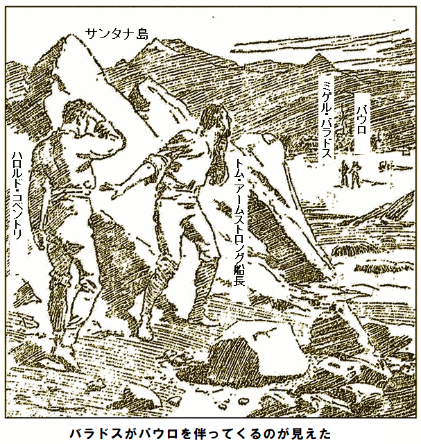
「奴らが一緒とは気に食わんが、こっちには武器が無い。ここは慎重に行こう。岩の後ろに隠れろ。わしの本能が告げておる。いまは我々の晴れ姿を見せない方が賢明だ」
長く待たなかった、というのは、奴らがまっすぐ島の方へ歩いて来て、近くへ来た時、興奮して怒っている声が、はっきりと聞こえたからだ。やがてバラドスが宝の隠し場所にピタリ止まった。船長が急いで埋め戻した場所だ。バラドスが怒ってパウロに悪態をついている。
「俺を馬鹿だとか、アホの中のアホとか言ったな」
パウロが冷静に言い返した。
「ああ、五百ドルに上乗せしろ。お宝はどこだ、たっぷりあるんだろ」
「お宝だと。わずか一万ドルかそこらのはした金だ。誰が教えたか」
「イシドレだ。出どこは知らん。お前さん、五対一だぜ。分け前をくれ。ヒッヒッヒッ、俺たちゃ、老人を殺し、女をさらうのに、おめえさんは堂々と逃げて、しかも獲物を一人占めかい。駄目だ。均等に分けろ」
バラドスが冷静を装って話した。
「妙な誤解をしているな。お宝を見つけたことはキミらに一言も言わなかったし、言うほど馬鹿じゃない。しゃあない、見せよう。本当かどうか自分の目で確かめろ。そこを探せ」
指し示したサンゴの下に、箱を隠してあり、
パウロが満足してうなった。
「これで十分、山分けだ」
バラドスはいかにも残念という風に言った。
「じゃあ、そうしろ。これで金に不満はなかろう、仕事にかかれ、すぐだ」
「望み通りにしまさ。金を払う気があるようだからな。だが裏切ったり、隠し事をしたりすれば、気をつけることだな。やい、撃ち殺してやる、犬ほども考えないぞ」
「へっ、ちんけな犬だな。言うのは簡単だ、五対一だからな。ところで、武器はあるか」
「ああ。ドン・ザルバの護身拳銃はおもちゃ同然だ。さあ、話は終わりだ。俺は仕事が一杯ある。お前の嘘で二日遅れた。ここを出たいんだ。ドンは一発で仕留めてやる。一時間後でも、女と船に乗れるぜ。ほかに何かあるか」
「ない。今から邸宅に戻って、不審が無いか確認する。昼過ぎ、この島へ戻って、お宝をヨットへ運ぼう。以上だ」とバラドス。
「俺は仲間全員に知らせなきゃならん。奴らのことは俺ほど知るまい。あのお宝をヨットに運ぶときゃ、全員いなきゃいけないぜ。さもないと、殺し合いになる。お宝を運び終わったら、邸宅へ戻って、総督をやって、女をさらう。周到な計画だろ」とパウロ。
「上等だ。じゃあ、俺が今から邸宅へ行くから、お前は見届けて、仲間を集め、この島へ呼んで、お宝をヨットへ乗せろ。それまで老総督は生かしておこう。だがそのあと、速やかにやるのだぞ。死人に口無しだ」
岩陰に隠れていた二人が成り行きに聞き耳を立てていると、パウロの声がささやき声になった。しばらくそんな調子で話していたが、やおらバラドスが不気味に笑い出し、声色にずるさがあった。
「へへへ、それでいい。時間をつぶした。行こう」
パウロが低い声で応じた。
「了解。すべて段取りする。だが、いいか、隠し事をしたら…」
それ以上は言わなかったが、言外にすごみがあった。
第十三章
やっと共謀者の声と足音が消え、邸宅へ通じる森へ去った時、むっくと立ち上がった船長の顔を見れば、
「武器はないし奴らの天下だが、わしがこの世の最後の男になって、やむなく血祭りにする。自衛上、不可欠だ。何なら道づれだ。一刻も無駄にできん。キミは邸宅へ行って、悪党どもに見られずに、味方に危険を知らせろ」
ハロルドは愛するハイジの置かれた恐ろしい立場がわかったので、率直に言った。
「船長は？ 一緒の方がよくないですか」
「わしはやることがある。ハロルド、よく聞け、これは奴らと我々の問題だ。奴らをやっつけない限り、我々が殺される。しかもバラドスは莫大な財宝をどこかに隠している。一点の疑いもない。もし生きていることを知ったら消しにかかる。その後は安全だからだ。味方に我々の生きていることを知らせてくれ。そのあと悪党に立ち向かう」
「はい。でも、どうやって？ 丸腰ですよ」
「手はある。夜にならない内に、この世から悪党五人を消してやる。わしの優しい
ハロルドはそれ以上聞かず、喜んで船長に
報復材料は全部そろっていた。備蓄のドロマイト弾もそのまま、蓄電池も無傷でそこにあった。欲しいものがそろっている。復讐計画の実行に、不足はない。船長がつぶやいた。
「間一髪だ。悪党どもを驚かしてやるぞ。我々は死んだと思われとる」
ハロルドにはうんざりする長旅で、しかも数々の危険に満ちた旅だった。もちろん我が身を
つるつるはげ頭に、あご顔のハロルドが奇妙な姿で、またもや逆境に見舞われ始めた邸宅へ、生い茂る銀梅花やオジギソウの中を這って行った。
第十四章
隠れて召使どもを見れば、何事も起こさないかのようだ。バルコニーで煙草を吸っている総督はいつもより不安顔で青白い。ハロルドの心臓がどきどきしたのは、父親の椅子に優しく心配げに寄り添うハイジの姿がやつれて見えた時だ。父娘の会話が聞こえる気がする。
やがてハイジが引き上げた。総督はバルコニーをしきりにせかせか歩いている。下の庭に降りて、しばらくヘリをぐるぐる回り、ハロルドに触れるぐらい近づいた。
「シーッ。何も
総督はびくっとしたが、静かに言った。
「墓場からの声ですね。一つ教えてくれないですか。二人とも助かったのですか」
そうだと言うと、総督は相変わらず
「でも状況は少しも良くありません。総督への危険は我々の時と全く同じです。パウロ一味の計画が進行中です。まさに今日の午後、あなたを殺して、娘さんを拉致する
総督が観念したかのように言った。
「知ってはいましたが、そんなにすぐと思っていませんでした。あなた同様武器はないし無力です。ただし、あの素晴らしい船長が悪党の
「そんな暇はありませんでした。悪党退治計画をすぐ立てたかったからです。恐らく今日の午後、奴らが一斉に島からお宝を盗る時に、やるのでしょう」
「もう盗っていますよ。この目で見ました。膨大な量の金銀宝石です。少なくとも英国通貨で二百万ポンドでしょう」
総督がイシドレの助けを借りてやったことを、急いで説明すると、ハロルドが言った。
「バラドスは仲間を裏切っていますね。お宝を一部あの島に残しています。今日の午後、取りに行く算段です。巨額分はバラドスが隠し、安全な時を見計らい、ここへ来て、運ぶ魂胆です。それにしても総督、よくやりましたね」
「やらざるを得なかったのです。さて、これからどうしましょうか」
「総督はここに留まって、悪党を慎重に見張ってください。奴らが一斉に邸宅を出たら、宝取りに行きますから後をつけて船長の仕掛けを見届けてください。もし失敗しても、皆でこの邸宅へ戻り、奴らに知られないうちに立てこもりましょう。でも船長は絶対に信用できます」
「私もそう思います。私達を守る為に、神があの素晴らしい男を使わされました。色々聞いたおかげで危機中でも全然孤独じゃありません」
「総督は安全な所で奴らを監視してださい。僕はここに留まって見ていますから、奴らが出発した直後、邸宅で再会しましょう。総督はすぐ戻ってください。総督がいないと疑惑を招きかねません」
助言をもらい、総督はその場を去った。もうハロルドはすべてを聞いた。ラリが
「すぐに立場がひっくり返るぜ。さんざん冷たくされ、バカにされたのを一挙に晴らしてやらあ。イシドレはすぐおとなしくさせてやる」
ゆっくり時が午後に突入し、総督が見ていると、悪党どもが邸宅前の緑の芝生にだんだん集まり、そこで何か重要なことを熱心に話しており、ドミノ遊びをしている風には見えなかった。
やや大げさな仕草をしたあと、もっともメキシコ人は何でも大げさなのだが、一斉に立ち上がり、あたかもゲームが面白くなかったかのように、一人ずつ海岸の方へぶらぶら歩いて行った。
奴らが消えるが早いか、ハロルドが藪から這い出し、邸宅のバルコニーへ駆けこんだ。薄暗い隅から優雅な人物が立ち上がり、喜びの声を上げ、両手を差し出した。ハイジだった。
「父から
「僕が死んだら、この世の終わりと思ったかい？ キミのことを思っていたが、絶望的だった……」
ハイジが一気に泣き笑いして言った。
「知ってたくせに。あなたがいなかったら、生きている甲斐がない」
ハロルドがじっと
「まだ危機は去っていないけど、乗り越えたら、キミの
ハイジの両目に輝く光で十分だ。それ以上は、総督が不意に現れて中断した。悪党どもが海岸へ行くので、総督は一緒に後をつけるようだ。
ハイジが一緒に連れてと頼んだ。
「お前はここに残りなさい。私達が戻るまでオブレディとイシドレがいる。私達が戻ったら、お前の運命が分かるよ」
ハロルドがハイジの手をもう一度握り、元気を出せと言って、総督の後について緑地帯に入った。邸宅は木々で海岸から見えない。どうやら船長の
そっと忍んで行くと、共謀者との間に作業場があった。悪党どもが夢中で言い合っていたから無警戒だ。総督とハロルドが作業場に着いた時、扉が開いて船長が現れた。
見られても恐れていないようだ。覚えているだろうが、島は陸続きになったので、島の方へつかつかと歩み寄り、全く
船長が
「バラドス、何をしてる。俺たちの物だぞ」
バラドスがすごんだ。
「さがれ、さもないと、墓場へ逆戻りだぞ」
総督とハロルドを見て、パウロが言った。
「やろうぜ。奴ら丸腰だ。いずれやるはずだ」
澄んだ空気だったので、浜辺の両人に筒抜けだった。すかさず船長が手を置いたスイッチは発電機に
船長がきっぱり言った。
「いいか、警告だ。このボタンをちょいと押すだけで木っ端みじんだぞ。運よくお前らの話をけさ聞いたので、自己防衛上、地雷をそこに仕掛けた。お前ら、やばいぞ」
弱気な仲間がこの脅しにビビったのを見て、パウロがすごんだ。
「嘘だ。やっつけようぜ……」
パウロはそれ以上言わず、突進した。ほかの悪党もつられて突進した。バラドスは突っ立ったまま、顔を両手で覆って、あたかも惨事を見たくないかのようだった。
船長がつぶやいた。
「自らまいた種だ。結局、そういう運命だった」
一陣の風でも押されたかもしれないが、わずかな力でスイッチを押すと、導火線を走る電気スパークが一瞬で伝えたのは死だった。
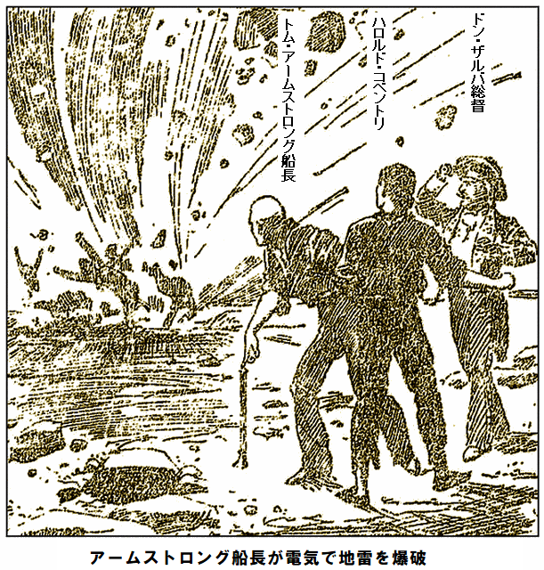
見物人にとっては一瞬、
船長の復讐計画は、そら恐ろしく成功し、皆は解放された。船長が進み出て、総督と握手して言った。
「ほかに手がなかった。でも奴らに値打はない。しかし、申し訳ない、財宝をふっ飛ばして」
返事代わりに、総督が作業場へ案内した所は、土がこんもり盛られ、巨大な金塊が埋められている。早速掘ってみると、キラキラ輝く金塊があり、高価な宝石も食いこんでいた。総督が経過を簡単に説明すると、船長が言った。
「わしならすぐ変えられる。再び溶かして、簡単に延べ棒に出来る。高価な宝石は無傷だ。なあ、ハロルド、キミの眼の前にあるこれこそが、危険の
ハロルドは、にが笑い。黄金そのものは何でもないが、ハイジの愛という宝物は確実に何にも勝るものだ。結局、エイミアス・コベントリの財宝より、はるかに価値のあるものを手に入れた。
シャイア地区の広大な土地に美しい邸宅があり、そこにハロルド・コベントリがかわいいメキシコ妻と住んでいる。社交界は南海の美貌を認め、ドン・ザルバが紳士の鏡だと称した。ドンは不動産を売り払い、英国に住む方を選んだ。故国よりどんよりした気候だが、ずっと安全な為だ。
ラリは昔の仲間の近くにいる方を好み、コベントリ・ホールの宿に落ち着き、そこで恋人相手に昔の
最後に、少額じゃないけどアームストロング船長は頑として二万ポンド以上受け取ろうとせず、豪邸のすぐ近くで奇妙な実験を色々行っている。冒険への意思は依然として強く、実験が終わったら、またアストラ国を再訪したいと願っている。いつかまた、お届けできるかもしれない
完
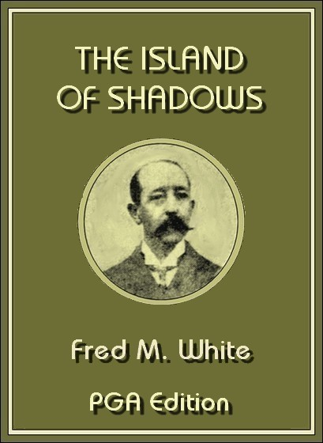